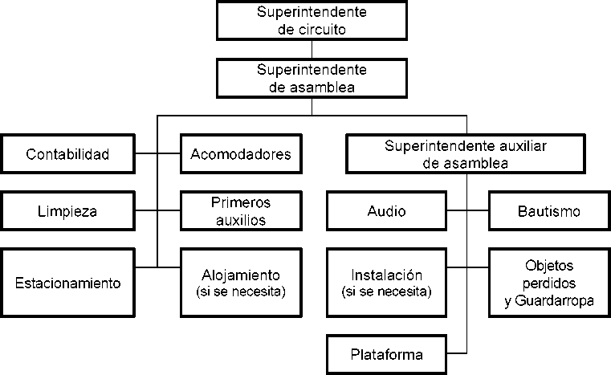

Pautas para Organizar Asambleas de Circuito
Abril de 2017
© 2017
Watch Tower Bible and Tract Society of Pennsylvania
Assembly Organization Guidelines Spanish (S-330-S)
Capitulo Parrafos
El papel del superintendente de circuito
El papel del superintendente de asamblea y su auxiliar
El papel de los superintendentes de departamento y sus auxiliares
Dominio del circuito en jw.org
Comportamiento en los departamentos
Objetos Perdidos y Guardarropa
Planes alternativos para asistir a asambleas de circuito
Hdice
Capitulo Parrafos
Inspection de establecimientos comerciales
Interpretacion en lenguaje de senas
Asambleas independientes................................................................. 24, 25
A. Lista de verificacion para el superintendente de circuito
B. Lista de verificacion para el superintendente de asamblea
1. Los temas Mblicos que se presentan en las asambleas de circuito constituyen alimento espiritual preparado por “el esclavo fiel y discreto” (Mat. 24:45-47). Esta oportuna instruccion fortalece a los hermanos y les brinda la oportunidad de ensanchar el circulo de amistades cristianas (2 Cor. 6:11-13). Hay razones mas que suficientes para trabajar con ahmco con el objeto de asegurar una buena organizacion.
2. Agradecemos su disposicion para participar en la organizacion de la asamblea (1 Tim. 4:10). A fin de ayudarlos a desempenar mejor sus deberes, nos complace proporcionarles las presentes Pautas para organizar asambleas de circuito (S-330). Familiancense bien con los principios y pautas que aqu se enuncian. Si siguen fielmente estas instrucciones y lo hacen con amor y amabilidad, la asamblea transcurrira sin contratiempos, sera una experiencia gozosa para ustedes y para otros y honrara a Jehova, el Dios de orden (Gen. 6:22; Ex. 40:16; Num. 1:54; 1 Cor. 14:33, 40; 1 Ped. 5:2, 3).
3. Este manual es propiedad de Watch Tower Bible and Tract Society of Pennsylvania y va destinado a los superintendentes de circuito permanen-tes y sustitutos, superintendentes de Salones de Asambleas y sus auxiliares, superintendentes de asamblea y sus auxiliares, superintendentes de depar-tamento y sus auxiliares, y hermanos de seguridad. No puede reproducirse para uso de personas distintas a las ya mencionadas. Antes de cada asam-blea, el superintendente de asamblea debe asegurarse de que todos los im-plicados en la organizacion del evento dispongan de la ultima version.
4. El superintendente de circuito se encarga de la organizacion de la asamblea. El superintendente de asamblea y su auxiliar cooperan con el en dirigir el trabajo que realiza el personal del circuito (vean los Apendices A y B).
5. Es competencia del superintendente de circuito nombrar a los super-intendentes de asamblea y sus auxiliares. Aunque no es necesario hacer cartas de nombramiento, debe informar al Departamento de Servicio mediante el formulario Notification de nombramiento o baja (S-2). Cuando reco-miende que se reemplace a cierto hermano, le explicara a este la razon con amabilidad (Mat. 7:12).
6. El superintendente de circuito debe ver con equilibrio su papel en la organizacion de la asamblea. No hace falta que cada nuevo superintendente de circuito reorganice todo el sistema si esta funcionando bien. Se debe po-ner el maximo empeno en ayudar a los hermanos nombrados a mejorar sus habilidades. Cada vez que haya cambios, el superintendente de circuito en-tregara a todos los superintendentes una lista actualizada de los hermanos que intervienen en la organizacion de la asamblea. La lista debe contener el nombre, fecha de nacimiento, direccion postal, correo electronico y numero de telefono del superintendente de asamblea y su auxiliar y de los superin-tendentes de departamento y sus auxiliares.
7. Se espera que el superintendente de asamblea y su auxiliar conozcan muy bien sus funciones y colaboren estrechamente con el superintendente de circuito en la organizacion de la asamblea. Esto contribuira a que el evento se desarrolle sin novedades y permitira que el superintendente de circuito se centre principalmente en el programa. Los hermanos que alcan-cen los 80 anos de edad no seran superintendentes de asamblea ni auxiliares.
8. El superintendente de asamblea tiene a su cargo la supervision de los departamentos. Para ayudarlo a desempenar esa funcion, su auxiliar supervi-sara directamente el trabajo de algunos de ellos. Aunque cada uno debe tomar decisiones respecto a los asuntos que estan bajo su jurisdiccion, la continua consulta entre ellos conducira a la buena cooperacion entre los departamentos (Prov. 13:10). Tales hermanos deben ser conocidos como hombres espiritua-les que se rigen por los principios Mblicos en su trato con los demas. Esto es importante porque otros los tomaran como ejemplo. Cuando surjan proble-mas, el superintendente de asamblea y su auxiliar ayudaran a los hermanos con madurez y bondad a fin de preservar la paz y la unidad (1 Ped. 4:8-10). Al trabajar de una forma armoniosa y humilde, podran dar al circuito instruc-ciones unificadas y el sistema funcionara sin sobresaltos.
9. Aunque la organizacion de los departamentos es responsabilidad de sus superintendentes, el superintendente de asamblea y su auxiliar deben co-nocer con dos o tres meses de anticipacion como estan los departamentos colocados bajo su supervision directa. Si alguno esta escaso de personal, se debe ayudar al superintendente a remediar la necesidad.
10. El dia de la asamblea, el superintendente de asamblea y su auxiliar deben visitar los departamentos que supervisan directamente, buscando as-pectos por los que felicitar a los hermanos y en los que ayudarlos a mejorar su desempeno. Si uno observa un problema en un departamento que no esta bajo su directa supervision, se lo mencionara al otro. Si la situacion reclama accion inmediata, el que ha detectado el problema debe tomar las medidas oportunas e informar lo antes posible al otro hermano.
11. El superintendente de asamblea y su auxiliar supervisan determina-dos departamentos, como se muestra en el siguiente organigrama:
12. No se pedira a los superintendentes de asamblea ni a sus auxiliares que informen a las congregaciones sobre las fechas de las asambleas de cir-cuito o a los precursores sobre la reunion especial previa a la asamblea, ni que distribuyan bosquejos de discursos, dirijan los ensayos o recopilen informacion para las Escuelas del Servicio de Precursor. Estas tareas le corresponden al superintendente de circuito.
13. El superintendente de circuito selecciona a hermanos capacitados para que sean superintendentes de departamento y auxiliares. El superinten-dente de asamblea y su auxiliar, asi como otros hermanos de experiencia del circuito, pueden ofrecer sugerencias en cuanto a quienes utilizar, cosa que el superintendente de circuito agradecera muchi'simo (Prov. 15:22). Se nombrara un superintendente de Alojamiento y un superintendente de Instalacion unicamente cuando las circunstancias asi lo aconsejen (vean 3:60-65, 81, 82). Siempre y cuando sea practico, el superintendente de cir-cuito puede destinar dos auxiliares a algunos departamentos a fin de preparar-los. Debe elegir al hermano mas indicado para cada asignacion, entendiendo que todos poseen habilidades diferentes (Rom. 12:3-8). Los seleccionados deben ser menores de 80 anos y disponer del tiempo necesario para cumplir a cabalidad sus funciones. Los principios Mblicos que rigen la eleccion de los superintendentes de congregacion son aplicables tambien a la de los su-perintendentes de asamblea. Los superintendentes deben ser hombres que sepan guiar y dar instrucciones con amor, que manifiesten el fruto del espiritu en todo momento y que dediquen tiempo a observar a quienes trabajan bajo su supervision y elogien generosamente su empeno (Ex. 18:21; Gal. 5:22, 23).
14. Al designar a un anciano superintendente de departamento o auxi-liar, normalmente no hace falta consultar al comite de servicio de su con-gregacion. Si mas tarde se pone en entredicho su idoneidad, el superinten-dente de circuito decidira si continua sirviendo o no. En las raras ocasiones en que no haya un anciano capacitado que sea superintendente de departa-mento o auxiliar, se puede utilizar a un siervo ministerial competente. Los publicadores no bautizados pueden ofrecerse para trabajar como volunta-rios, pero no pueden ocupar puestos de supervision. Para no dar una impre-sion equivocada, no se nombrara a un padre y su hijo superintendente de Contabilidad y auxiliar.
15. Si lo considera necesario y practico, el superintendente de circuito puede celebrar una breve reunion con los encargados de determinados de-partamentos antes de la asamblea. Puede hacerlo el primer ano que sirve en ese circuito o la primera vez que se utilice un establecimiento. Tambien puede pedir al superintendente de asamblea y su auxiliar que intervengan en la reunion, quizas presentando informacion relacionada con los departamen-tos que estan bajo su directa supervision. En otras ocasiones, quizas baste una reunion con el superintendente de asamblea y su auxiliar. Sea como sea, todos deben estar al tanto de sus funciones y estar preparados para desempenarlas.
16. Capacitacion. El superintendente de circuito y el superintendente de asamblea y su auxiliar, asi como los superintendentes de departamento, deben ser conscientes de la necesidad de capacitar a otros, sobre todo a los mas jovenes que tengan potencial y esten esforzandose por adelantar. La capacitacion gradual de un hermano puede iniciarse nombrandolo prime-ro superintendente auxiliar y luego superintendente de departamento. Cuan-do sea necesario, y en un momento oportuno, el superintendente de circuito tratara con el superintendente de asamblea y su auxiliar cualquier aspecto organizativo que precise atencion, como, por ejemplo, las funciones de un departamento que deban mejorarse.
17. Cuando se percaten de alguna deficiencia, traten de ayudar al her-mano siempre que sea posible. Ahora bien, si hay que cambiar al superin-tendente de un departamento, el superintendente de circuito debe explicarle, personalmente y con amabilidad, la razon.
18. El dia de la asamblea de circuito, los ancianos se reuniran para ana-lizar asuntos financieros y de otra naturaleza del circuito (vean Instruccio-nes para la contabilidad del circuito [S-331] para mas informacion sobre los temas que se pueden tratar). El superintendente de asamblea presidira estas reuniones, y cualquier anciano podra hacer preguntas o comentarios. Con una buena planificacion, y si el superintendente de Contabilidad y el superintendente de asamblea mantienen una fluida comunicacion y coope-racion, no hay razon para que estas reuniones sean largas.
1. El superintendente de circuito es el presidente de la asamblea y, como tal, el principal encargado de organizar el programa, designar a los oradores y presidentes de sesion, supervisar los ensayos, aprobar los anuncios, etc. (vean 2:2, 3).
2. Todos los anuncios deben ser revisados y aprobados por el superin-tendente de circuito. Excepto en casos de extrema urgencia, solo se haran anuncios en los penodos programados para ello (vean el capftulo 3, parrafo 39, sobre anuncios relacionados con el bautismo en lugares con poco espa-cio alrededor de la piscina).
3. No se haran anuncios sobre mascar goma (chicle) en el auditorio. Si esta o no permitido comer en el auditorio dependera mayormente de la disposicion y uso del establecimiento (vean el capftulo 4, parrafo 19, sobre anuncios relacionados con comida y bebidas en Salones de Asambleas).
4. Las preguntas sobre organizacion de la asamblea deben dirigirse al Departamento de Servicio, Seccion de Asambleas Regionales y de Circuito. Inmediatamente despues de cada asamblea (o serie de asambleas, si el cir-cuito esta dividido en secciones), el superintendente de circuito enviara el formulario Informe sobre la asamblea de circuito (S-318). Si a su juicio hay que informar sobre dificultades con la plataforma, el sonido, el video, el montaje, la iluminacion, el establecimiento, etc., o si tiene observaciones, sugerencias o experiencias destacables relacionadas con el local o el trabajo de los departamentos, puede mandar por separado un breve informe a la Seccion de Asambleas Regionales y de Circuito.
5. Si el establecimiento estaba atestado, el superintendente de circuito tal vez quiera analizar con el superintendente de asamblea, su auxiliar y otros ancianos maduros la posibilidad de dividir el circuito en secciones A y B para futuras asambleas. Luego, debe llamar sin demora a la Seccion de Asambleas Regionales y de Circuito para exponer el asunto. Si la peticion es aprobada, se le pedira que la envle por escrito. Quizas sea posible darle curso antes de confeccionar el calendario de asambleas del siguiente ano.
6. Se puede contactar con la Seccion de Asambleas Regionales y de Circuito de lunes a viernes, de 8 de la manana a 5 de la tarde [zona horaria], en la direccion y telefono indicados a continuacion:
[Nombre de la corporacion]
A la atencion de: Departamento de Servicio, Seccion de Asambleas Regionales y de Circuito
[Direccion]
[Ciudad, provincia o estado, codigo postal]
[Numero de telefono]
[Numero de fax]
[Direccion electronica]
7. Seccion de Gestion de Riesgos de la Sucursal. Los siguientes datos se suministran para que el superintendente de circuito pueda comunicarse con el Departamento de Contabilidad, Seccion de Gestion de Riesgos de la Sucursal, a fin de tratar asuntos relacionados con seguros, accidentes y cosas por el estilo:
[Nombre de la corporacion]
A la atencion de: Departamento de Contabilidad, Seccion de Ges-tion de Riesgos de la Sucursal
[Direccion]
[Ciudad, provincia o estado, codigo postal]
[Numero de telefono]
[Numero de fax]
[Direccion electronica]
8. La mayona de las cartas y formularios se cuelgan en jw.org para su descarga e impresion. Dos ancianos, que pueden ser el superintendente de asamblea y su auxiliar, seran los administradores del dominio. Cuando se designe a un hermano para uno de los puestos enumerados en el formulario Funciones del dominio del circuito en jw.org (S-334), se le pedira que le facilite su codigo de usuario al administrador para que lo anada al dominio y le asigne las funciones pertinentes.
9. Solo se dara acceso al dominio del circuito al superintendente de departamento. Los siervos ministeriales no tendran acceso a ninguna parte de el. Si un superintendente de departamento no puede acceder a la infor-macion que necesita en jw.org, el superintendente de asamblea o su auxiliar (quienquiera que sea el responsable de ese departamento) se encargara de que reciba la ayuda necesaria.
10. Antes de llamar a la Seccion de Ayuda de la sucursal para solicitar asistencia tecnica sobre el acceso a jw.org, lean el documento “Ayuda” de dicho sitio y traten de obtener asistencia localmente. Conviene asimismo re-pasar los principios contenidos en las instrucciones a los cuerpos de ancianos sobre el uso de jw.org. Las consultas sobre cartas o formularios colocados en jw.org deben dirigirse al Departamento de Servicio, Seccion de Asambleas Regionales y de Circuito.
11. No se emplearan reflectores ni efectos especiales de iluminacion durante el programa, salvo por indicacion de la sucursal. El superintendente de circuito determinara de antemano si la iluminacion de la plataforma es adecuada; si no lo es, pedira asesoramiento a la Seccion de Asambleas Regionales y de Circuito. Las luces de sala no se deben atenuar.
12. En todos los departamentos deben imperar la debida dignidad y un ambiente de trabajo tranquilo. Durante el programa, solo estara el personal estrictamente necesario. Lo anterior es de especial importancia cuando los departamentos estan situados en los pasillos.
13. Debe haber un megafono y una linterna grande cerca de la plata-forma por si se va la luz o falla el sonido.
14. El superintendente de asamblea, su auxiliar y el superintendente de Acomodadores deben elaborar un plan de emergencia, que sera revisado y aprobado por el superintendente de circuito. Si la administracion del esta-blecimiento cuenta con uno, se utilizara como base para el de la asamblea, adaptandolo a las necesidades locales. En el deben figurar los procedimien-tos de evacuacion y una lista con los telefonos de los servicios de urgencias.
15. Antes de alquilar o comprar equipos —como piscinas para el bau-tismo—, el superintendente de circuito y el superintendente de asamblea deben obtener la aprobacion de la Seccion de Asambleas Regionales y de Circuito. Es posible que esta ya sepa donde conseguirlos o que tenga pautas para su estandarizacion. En algunos casos, quizas se puedan pedir prestados en lugar de alquilarlos o comprarlos. Las asambleas que utilicen las mismas instalaciones tal vez puedan compartir los equipos. Estos se deben guardar para su reutilizacion siempre que sea viable. Toda compra de materiales y suministros debe ser autorizada por el superintendente de asamblea.
16. Para evitar el robo o la perdida de equipos costosos, no se deben dejar en las instalaciones durante la noche o en los intervalos entre una asam-blea y otra a menos que esten bien asegurados en todo momento (vean 3:29). Las solicitudes de equipos, suministros o servicios distintos a los es-pecificados en el contrato que se hagan a la administracion del estableci-miento se realizaran unicamente a traves del superintendente de circuito o de un hermano designado por el, a fin de evitar trabas en las negociaciones.
17. Por lo general, la asamblea no requiere de mucho trabajo previo, sobre todo si se usa el mismo establecimiento que otros anos. No obstante, algunos trabajos suelen ser necesarios, como el montaje de los departamentos, la instalacion y prueba del equipo de sonido y la limpieza del local. Estas tareas se deben planear y organizar con el mayor cuidado. Los voluntarios que se ocupen de ellas tendran que llevar sus propios alimentos. Se ha de animar a todos a vestirse y arreglarse con decoro.
18. La seguridad es prioritaria y debe tomarse en serio. El superinten-dente de circuito, el superintendente de asamblea y su auxiliar, y los super-intendentes de departamento y sus auxiliares deben estar familiarizados con las normas de seguridad contenidas en este apartado y en otros del docu-mento Pautas para organizar asambleas de circuito (S-330) (vean 3:8, 11, 40, 44).
19. Los superintendentes de departamento les asignaran a los volunta-rios tareas adecuadas a su capacidad y experiencia, y antes de la asamblea les comunicaran las medidas y politicos de seguridad que han de cumplir.
20. La mayona de los accidentes ocurren en las escaleras, al cargar y descargar camiones y al acarrear materiales. Se debe disponer de suficientes voluntarios para transportar cosas de una manera segura. A fin de evitar accidentes, se asignara a hermanos maduros para que, con mucho cuidado, saquen la basura, transporten equipos, etc. En particular, quienes empleen cuchillos, herramientas electricas y maquinaria deben ser muy conscientes de la seguridad y utilizar el equipo de proteccion necesario.
21. El superintendente de circuito debe asignar a uno o dos hermanos competentes, observadores y de mucho tacto para que ayuden a prever ries-gos de seguridad. Se les invitara a las reuniones con los superintendentes de departamento y se les entregara un ejemplar de Pautas para organizar asambleas de circuito (S-330) (vean 1:15).
22. Durante la asamblea, el hermano/s de seguridad colaborara con el superintendente de asamblea y los superintendentes de departamento indicados para neutralizar los posibles peligros. Tambien inspeccionara fre-cuentemente las instalaciones, estacionamientos y aceras, asi como las acti-vidades de la asamblea. Entre los factores de riesgo figuran el peligro de tropezones, superficies mojadas, grietas irregulares en el suelo o las escaleras, pasamanos sueltos o inexistentes, cielorrasos de yeso u hormigon des-prendidos, etc.
23. Los danos a la propiedad causados por personal de la asamblea o por el publico se informaran en el formulario Notification de incidente (TO-5). El superintendente de circuito lo revisara y lo enviara al Departa-mento de Contabilidad, Seccion de Gestion de Riesgos de la Sucursal. Se guardara una copia en el archivo del circuito durante un ano. Cuando se produzcan danos a la propiedad o perdida de bienes, ningun miembro del personal de la asamblea aceptara un acuerdo o compromiso sin el visto bueno de la sucursal.
24. Se debe acondicionar un cuarto o un lugar cerrado que tenga venti-lacion para que las madres atiendan a sus bebes. Debe estar conveniente-mente situado y provisto de sillas, mesas, altavoces y, de ser posible, banos.
25. Por lo general, no es factible habilitar secciones o cuartos especiales para las personas que padecen claustrofobia, enfermedades graves o hipersensi-bilidad a los productos qumicos. Antes de autorizar excepciones, los superin-tendentes de circuito deben comunicarse con la Seccion de Asambleas Regionales y de Circuito, teniendo en cuenta lo que mas convenga a los intereses de la mayona de los asistentes.
26. No es necesario reservar una zona de estacionamiento especial para los superintendentes. No obstante, el comite reservara unos cuantos espacios para las operaciones de la asamblea, ademas de los que se destinan para los discapa-citados.
27. El superintendente de circuito sera el primero en mostrar su hospi-talidad al representante de la sucursal (Heb. 13:2). Debe comunicarse con el con suficiente antelacion y buscarle alojamiento. Para facilitarle los planes de viaje, le suministrara los siguientes datos, si procede:
• Domicilio permanente.
• Numero de telefono adonde se le pueda llamar a el o a un her-mano de responsabilidad (como el superintendente de asamblea) en caso de que haya cambios de ultima hora, como en los planes de viaje.
• Informacion sobre el aeropuerto mas cercano al local que se usara.
• Tiempo de viaje desde el aeropuerto hasta el alojamiento o hasta el local que se usara.
28. Si las circunstancias lo permiten, el superintendente de circuito o un anciano de responsabilidad del circuito que celebra la asamblea debe recibir personalmente al representante de la sucursal, llevarlo al alojamiento y darle de cenar si hace falta (vean 3:82). Es deber del superintendente de circuito velar por que se atiendan sus necesidades durante el fin de semana, lo que incluye proveerle desayunos y almuerzos adecuados y sencillos, al igual que las cenas, si es necesario. El superintendente de circuito o el hermano designado con ese fin debe llevarlo al sitio desde donde emprendera su via-je de regreso.
29. Los gastos de viaje del representante de la sucursal los cubrira el superintendente de asamblea con fondos del circuito. Este desembolso se considera un gasto normal de operacion y no requiere una resolucion (vean Instrucciones para la contabilidad del circuito [S-331]).
30. En las asambleas de circuito no es necesario establecer un Depar-tamento de Servicio Voluntario. Cada departamento es responsable de re-clutar a sus voluntarios con bastante antelacion. La edad minima para traba-jar sin estar acompanado es de 16 anos; los menores de esa edad deberan estar acompanados de uno de sus padres o de un adulto, y realizaran tareas acordes con su edad y experiencia. No se usaran en puestos de supervision o direccion a hermanas, publicadores no bautizados o inmigrantes indocu-mentados. Siempre y cuando se obre con juicio, no hay objecion a que las hermanas casadas trabajen en el mismo departamento de sus esposos. A todos los voluntarios se les debe tratar con amor y bondad cristiana.
31. Precursores regulares. Si se necesita a un precursor regular para que realice trabajos previos o posteriores a una asamblea, el superintendente de asamblea puede concederle un credito de horas para ayudarlo a alcanzar su meta mensual. Se debe explicar a los precursores que no podran contar el tiempo que trabajen durante los dias de su propia asamblea. Se procurara que nadie abuse de esta disposicion.
32. Precursores especiales. No se debe sacar a los precursores especiales de su asignacion sin un buen motivo. Antes de invitarlos a colaborar en trabajos previos o posteriores a una asamblea, el superintendente de circuito hara la peticion al Departamento de Servicio, Seccion de Asambleas Regionales y de Circuito, indicando el nombre del precursor, las fechas en que lo usaran, la razon por la que se le necesita y la asignacion que se le piensa dar. Despues, el superintendente de circuito le ofrecera la asignacion y le comunicara que la sucursal ha dado su consentimiento en caso de que acep-te. Un precursor especial que haya sido aprobado por la sucursal para reali-zar trabajos previos o posteriores a la asamblea puede presentar sus gastos de viaje al circuito para su reembolso. El circuito no costeara los gastos de viaje ocasionados por ensayos de un precursor especial que participe en el programa.
33. No se distribuyen publicaciones en las asambleas de circuito.
CAPfrULO 3
1. Para garantizar el debido manejo de los fondos donados, por lo menos dos hermanos del Departamento de Contabilidad deberan estar presen-tes al recoger el dinero, contarlo y depositarlo. El hermano a quien se designe superintendente de contabilidad debe ser un anciano muy capacitado y confiable, capaz de entender y seguir instrucciones detalladas (para mas directrices, vean Instrucciones para la contabilidad del circuito [S-331]).
2. Mucho antes de la asamblea, el superintendente de Acomodadores y su/s auxiliar/es se reuniran para analizar las instrucciones de este apartado, las Instrucciones para los acomodadores de las asambleas de circuito (S-176) y cualquier normativa dictada por el establecimiento, asi como el sistema para reclutar acomodadores (vean 1:9).
3. Los acomodadores deben ser hermanos maduros y de experiencia —preferentemente ancianos o siervos ministeriales— que demuestren buen juicio, que sean despiertos, respetuosos y amables, y que vayan bien vesti-dos y arreglados. Los menores de 20 anos deben ser siervos ministeriales. El superintendente de Acomodadores le entregara con mucha anticipacion a cada uno un ejemplar del documento Instrucciones para los acomodadores de las asambleas de circuito.
4. Todo acomodador debe portar una tarjeta de identificacion. No se les designara con los terminos “seguridad” ni “guardias”, pues son “acomoda-dores” o “vigilantes”.
5. En la manana de la asamblea, antes de que se abran las puertas al publico, el superintendente celebrara una reunion con todos los acomodado-res. En ella se repasaran algunas ideas tomadas de Instrucciones para los acomodadores de las asambleas de circuito y de este apartado, incluyendo la forma en que un acomodador puede invitar con amabilidad a quienes no esten sentados durante las presentaciones musicales a ocupar sus asien-tos y disfrutarlas en silencio. Tambien se repasaran los procedimientos de emergencia para que todos sepan como actuar en caso de evacuacion u otra urgencia y como contactar de inmediato con el Departamento de Primeros Auxilios y con el superintendente de Acomodadores o su auxiliar (vean 2:14).
6. Cuando el personal de la asamblea llegue a trabajar antes de que se abran las puertas al publico, ya debe haber algunos acomodadores en el es-tablecimiento. Y por lo menos quince minutos antes de su apertura debe haber suficientes acomodadores que ayuden a controlar al publico y a encontrar
asientos libres. Si es necesario, se pueden asignar turnos. El superintendente de Acomodadores se encargara de que en todo momento haya dos hermanos en la puerta de entrada al Departamento de Contabilidad.
7. Directorios. El superintendente de asamblea le entregara al superin-tendente de Acomodadores una cantidad suficiente de directorios sencillos en los que se indique donde se encuentran los distintos departamentos, ex-cepto las zonas de Contabilidad. Tambien les suministrara copias al super-intendente de circuito y a todos los superintendentes de departamento. El superintendente de Acomodadores le dara un directorio a todo acomodador que no conozca bien las instalaciones. Los directorios no son para distribu-cion general.
8. Escaleras y ascensores. En cada nivel se deben poner acomodado-res en ambos extremos de las escaleras para supervisar su uso y ayudar a quienes lo necesiten. Los acomodadores deben saber como detener las escaleras mecanicas en caso de emergencia. Cuando la administracion del esta-blecimiento lo permita, deben manejar los ascensores a fin de garantizar un trafico ordenado y una adecuada supervision.
9. Asientos. El superintendente de circuito y el superintendente de asamblea decidiran que secciones de asientos se usaran, teniendo en cuenta la asistencia prevista, incluido el porcentaje de personas discapacitadas, ancianas y enfermas. No usen las secciones de los niveles superiores ni las que estan detras de la plataforma si no es necesario. El superintendente de circuito y el superintendente de asamblea podran abrirlas mas tarde si la asistencia es superior a la esperada. Todas las secciones que probablemente vayan a ocuparse deben abrirse al mismo tiempo al comienzo del clia. Asi se evitara congestionar algunas zonas y se permitira a los asamblei'stas sentar-se donde prefieran. Cada seccion de asientos debe tener al menos dos aco-modadores asignados, uno al frente y otro detras.
10. El Departamento de Acomodadores reservara una seccion de asien-tos frente a la plataforma para los candidatos al bautismo. El superintenden-te de Acomodadores y el superintendente de Bautismo se encargaran de ello.
11. Por razones de seguridad, no se permiten coches para bebes ni sillas plegables. No obstante, si las autoridades y el establecimiento lo autorizan, podran usarse sillas plegables y coches para adultos y ninos con alguna dis-capacidad, pero siempre en la seccion reservada para discapacitados.
12. Se deben reservar asientos adecuados —asi como espacios para sillas de ruedas— para las personas discapacitadas, enfermas o mayores de 65 anos. Estas secciones especiales pueden senalarse con letreros e incluir algunos asientos en la planta baja, las primeras filas de abajo hacia arriba o los asientos cercanos a los pasillos de entrada al recinto. En lo posible, estos asientos deben tener una buena vista de la plataforma y facil acceso a los aseos. Las personas que cuiden directamente a quienes ocupen estas seccio-nes podran sentarse con ellos o cerca. Antes de la asamblea, se informara a las congregaciones asignadas que filas o secciones se reservaran con este objetivo.
13. Recuento de asistentes. Para garantizar que las cifras de asistentes sean uniformes, se efectuara el recuento simultaneamente en el momento de mayor asistencia a cada sesion, segun lo determine el superintendente de circuito. El superintendente de Acomodadores entregara la cifra al superin-tendente de asamblea y al superintendente de circuito para que se anuncie al final de cada sesion.
14. Resolution de problemas. Siempre que el establecimiento este abierto al publico, debera haber acomodadores que vigilen y controlen el acceso a la plataforma, pero sin distraer al auditorio.
15. En caso de personas que alteren el orden, tengan en cuenta las si-guientes pautas:
• Es mejor pasar por alto las perturbaciones menores; pero si alguien persiste en distraer a los presentes, se le pedira que abandone el lugar. Si se niega a irse, se le advertira que si sigue causando pertur-bacion se llamara a la politia. Si aun asi no coopera, se llamara a la politia o al personal de seguridad del establecimiento. Cuando llegue la politia, se le puede decir que la persona esta alterando el orden y que se le ha retirado la invitation implicit;! a la asam-blea. Tambien se le puede decir que estamos dispuestos a presentar una demanda por invasion de la propiedad privada si se considera prudente y necesario.
• Los acomodadores son cautos y no ceden a la tentacion de em-plear la fuerza para obligar a una persona problematica a mar-charse, pues quizas este buscando un pretexto para entablar una demanda. Por lo general, los acomodadores no deben intentar sacar por la fuerza a una persona conflictiva. Si la persona actua con violencia desde el principio, se debe llamar inmediatamente a la politia o al personal de seguridad del establecimiento. No hace falta darle una advertencia. Quien sea victim;-! de una agresion fisica tiene derecho a defenderse, y los acomodadores deben hacer lo que este razonablemente a su alcance para prote-gerlo. Si un cristiano no puede escapar de un agresor que pare-ce resuelto a causarle dano, puede repeler la agresion y hasta golpear a su atacante si es necesario. Logicamente, esta reaccion defensiva tiene como unico fin la defensa propia o de terceras personas mientras llega la politfa (g 6/08 pag. 11; g87 22/11 pag. 28).
16. A veces, los ninos u otras personas pueden activar una alarma contra incendios. Si es probable que esto ocurra, hay que apostar a un acomo-dador al lado de cada alarma en las zonas objeto del contrato durante todo el tiempo que el establecimiento este abierto al publico.
17. Si surge una emergencia no medica, los acomodadores pediran in-mediatamente instrucciones al superintendente del departamento o a su au-xiliar, que informaran inmediatamente de lo ocurrido al superintendente de asamblea o a su auxiliar. Estos a su vez se lo comunicaran al superintenden-te de circuito. En caso de una emergencia medica, los acomodadores notifi-caran de inmediato al Departamento de Primeros Auxilios para que el personal cualificado preste ayuda y llame a los servicios de urgencia si es preciso.
18. Vigilantes. Cuando sea necesario, el Departamento de Acomodado-res asignara a hermanos capacitados y espiritualmente maduros como vigilantes nocturnos, mas que nada para cuidar los equipos. El personal del es-tablecimiento que este de turno debe saber que vigilantes autorizados se quedaran despues de que se cierren las puertas (vean 2:16; 3:29).
19. Puesto que los vigilantes nocturnos se perderan gran parte del pro-grama, el superintendente de circuito puede optar por escoger a hermanos competentes que esten asignados a otras asambleas. Asi, podran asistir a su asamblea en compi-ini'ii de sus familias.
20. Antes de la asamblea, el superintendente de Audio y el superinten-dente de Plataforma deben estudiar juntos el Diagrama de la plataforma para la asamblea de circuito (S-343). Para que el programa espiritual le sea de provecho al auditorio, es esencial que pueda oi'rse y verse bien desde todos los asientos. Aunque el superintendente de Audio conozca los aspec-tos tecnicos del trabajo mejor que el superintendente de circuito y el super-intendente auxiliar de asamblea, debe mantener una buena comunicacion para garantizar que las decisiones importantes cuenten con la aprobacion del superintendente de circuito. En los establecimientos donde se celebren varias asambleas, los superintendentes de Audio y los tecnicos deben com-partir la informacion de caracter tecnico, como los ajustes optimos de los equipos. Debe haber representantes del Departamento de Audio cuando el superintendente de circuito realice con los participantes los ensayos de po-siciones en la plataforma.
21. El superintendente de Audio y miembros de este departamento deben comprobar periodicamente la calidad del sonido sentandose en diferentes sitios para oir el programa. A fin de mantener la calidad de las presentacio-nes grabadas, la musica y las palabras se deben ecualizar por separado.
22. Por lo general, es mejor colocar el mezclador de audio y otros apa-ratos relacionados en la zona de asientos y no en un extremo de la platafor-ma; de ese modo, los operarios pueden ver la plataforma y oir el programa igual que el auditorio. Para no crear distracciones, solo deben estar alii los encargados de manejar el sonido.
23. Al final del dia de la instalacion, el equipo de sonido debe quedar montado, probado y ecualizado. Tambien se debe haber comprobado que la senal llegue a todas partes para que el audio sea ni'tido desde el principio de la asamblea. Salvo en casos de emergencia, no debe transmitirse nada antes de los comentarios introductorios del presidente de la sesion.
24. La calidad del audio puede verse afectada por una instalacion de-fectuosa u otros problemas del establecimiento, como el zumbido de ba-lastos o transformadores. Es mejor tratar de corregir estas anomaHas antes de pedir o instalar equipo adicional. El superintendente de circuito o un hermano asignado por el puede pedir a la administracion del estableci-miento que haga las reparaciones o que nos permita hacerlas mucho antes de la asamblea.
25. Se proporcionan presentaciones musicales para ponerlas al inicio de cada sesion, las cuales forman parte del programa. Su objetivo no es servir de telon de fondo mientras los hermanos conversan o fraternizan. Los pre-ludios se consideran parte de nuestra adoracion a Dios, como lo son las canciones que se entonan en estos eventos. De ah que el volumen deba ser mayor que el de la musica de fondo que se toca en las congregaciones antes y despues de las reuniones semanales. Al comienzo, la presentacion se debe oir claramente por encima de las conversaciones y, a medida que el auditorio ocupe sus asientos, se ira bajando el volumen hasta que alcan-ce un nivel adecuado para un auditorio quieto y atento.
26. Video. Si el establecimiento esta dotado de equipo de video, se puede utilizar para proyectar el programa, la letra de las canciones, y el tema y el texto del ano. El superintendente de Audio y sus auxiliares deben comprobar periodicamente la calidad de la imagen observando los enfo-ques, los angulos de la camara y las transiciones durante el programa. Durante los preludios musicales y las oraciones se debe mostrar una toma amplia de la plataforma, a menos que se especifique lo contrario.
27. Durante el discurso de bautismo, el orador debe aparecer en panta-lla todo el tiempo. A menos que sea una asamblea en lenguaje de senas, no se debe enfocar a los candidatos cuando se les pida ponerse de pie ni cuando contesten las preguntas, pero si se permite hacerlo mientras abandonan la zona principal de asientos despues de la cancion. En las asambleas en lenguaje de senas se permite mostrar una toma amplia de la plataforma y las primeras filas del auditorio durante el tiempo que se pide a los candidatos que permanezcan de pie y cuando contesten las preguntas. Asi se podra ver, aunque solo sea parcialmente, a los candidatos y sus respuestas afirmativas desde atras. En todas las asambleas, y si el equipo lo permite, se mostrara la inmersion de los candidatos para que el auditorio lo vea. A veces puede ser necesario cambiar la toma para evitar situaciones embarazosas, como, por ejemplo, si alguien tiene dificultades para entrar o salir de la piscina o si surge una emergencia. Hay que usar el buen criterio a la hora de decidir que imagenes deben aparecer en pantalla.
28. Los discursos interpretados tienen caractensticas singulares que va-ri'an en funcion del lugar y el numero de idiomas a los que se interpretan. En general, los asistentes deben ver un plano del orador a pantalla comple-ta. Cuando el interprete este de pie junto al orador, ambos apareceran en la toma inicial durante unos segundos para que los asistentes vean que se trata de una interpretacion. Puesto que los textos bi'blicos suele leerlos el interpre-te, se mostrara su imagen a pantalla completa mientras los lee, si es posible. Durante el resto del discurso se enfocara unicamente el orador. El interprete no debe aparecer en pantalla cuando se encuentre en otro auditorio, en otra plataforma o sentado a una mesa. Cuando el discurso se interprete a lengua-je de senas, se mostrara al interprete a pantalla completa y al orador en una ventana secundaria que ocupe alrededor de la cuarta parte de la pantalla, si es tecnicamente posible.
29. Equipos. No se deben alquilar ni comprar equipos de audio, radio, telefono o video sin la aprobacion de la sucursal. A veces se pueden tomar prestados algunos accesorios —como microfonos o pedestales— de Salones del Reino, Salones de Asambleas u otras fuentes locales. El superintendente de audio se asegurara de que el equipo este a buen recaudo en todo momen-to, sobre todo por la noche y entre una asamblea y la siguiente (vean 2:16).
30. Aunque normalmente no se instala equipo de sonido en los pasillos, si el local ya lo tiene, puede usarse para que los voluntarios que trabajan en departamentos situados fuera de la zona de asientos escuchen el programa. En algunos casos, la transmision en FM para las personas con dificultades de audicion es suficiente para que estos departamentos oigan el programa mediante una radio.
31. Transmision en FM para personas con dificultades de audicion. Si el establecimiento ya cuenta con transmisor de FM, el Departamento de Audio debe transmitir el programa para las personas con dificultades de au-dicion. Recomiendenles que lleven un pequeno receptor de FM y unos audi-fonos. El Departamento de Audio le indicara al superintendente de circuito que frecuencia/s hay que sintonizar para que se anuncie al comienzo de la sesion.
32. Grabaciones. No debe conectarse a los sistemas de sonido y video ninguna grabadora que pertenezca a un asistente. Toda solicitud de transmision en AM o FM aparte de lo ya descrito debe dirigirse al Departamento de Servicio, Seccion de Asambleas Regionales y de Circuito.
33. Las sucursales proporcionan grabaciones en video de las asambleas en curso en muchos idiomas para que se transmitan en JW Stream. Cuando esto no suceda, el Departamento de Audio podra hacer una grabacion de audio o video para uso de quienes no puedan asistir por sus circunstancias.
34. El superintendente de este departamento se ocupa de todo lo refe-rente al bautismo, como las instrucciones a los candidatos, las necesidades de los vestuarios y el transporte al lugar de inmersion si es necesario. Dicho hermano debe recordarle al superintendente de Acomodadores que reserve una seccion de asientos para los candidatos y que asigne acomodadores para mantener el orden alrededor de la piscina. Tambien le pedira al superinten-dente de Primeros Auxilios que envi'e como representante por lo menos a un profesional con licencia o titulacion. Ademas, inspeccionara el lugar del bautismo cada vez que vaya a usarse para comprobar que esta en condicio-nes apropiadas. Esta gestion cobra especial importancia si el bautismo tiene lugar fuera del sitio de la asamblea. Asimismo, comprobara que la tempera-tura del agua sea la adecuada.
35. Los vestuarios deben organizarse de tal modo que los candidatos tengan privacidad mientras se cambian. Cada vestuario tendra asignados al menos dos voluntarios maduros que ayuden a los candidatos y vigilen sus pertenencias. Si un candidato lleva un traje de bano poco recatado, estos lo ayudaran a corregir la situacion antes de que salga. Se deben to-mar las precauciones necesarias para evitar accidentes, como secar el suelo mojado alrededor de la piscina, a lo largo del pasillo que va de la piscina a los vestuarios y en el interior de estos.
36. En la mayoria de los casos, solo los candidatos al bautismo deberan sentarse en la seccion reservada para ellos; no obstante, se permite que una persona discapacitada este acompanada de un cuidador. No se deben usar microfonos para amplificar las respuestas de los candidatos. Estos permaneceran en su seccion mientras se canta la cancion final y luego sal-dran en fila atendiendo a las instrucciones de los acomodadores.
37. Quienes realicen el bautismo deben ser ancianos de apariencia ejem-plar. Llevaran camisetas blancas lisas y trajes de bano recatados. Es mejor no usar a hermanos que tengan tatuajes visibles. Al sumergir a los candida-tos, lo mejor es pedirles que se tapen la nariz con una mano y sujeten la mu-neca con la otra, doblen las rodillas y se echen hacia atras. Asi sera menos probable tener que volver a sumergir a alguien porque una parte de su cuerpo haya salido del agua. Cada candidato sera bautizado por un hermano, a menos que las circunstancias exijan que otro lo ayude. Se bautizara a los candidatos individualmente. No se permitira que se tomen de la mano en el momento de su bautismo. Tampoco se permitira que posen para fotografias dentro de la piscina, sea antes o despues de la inmersion.
38. No se debe pedir a las congregaciones que entreguen al Departa-mento de Bautismo un listado de los candidates, pero si se les puede preguntar si hay alguien discapacitado, enfermo o que necesite ayuda especial. A los candidatos no se les preguntara si se bautizan por segunda vez ni si han sido aprobados por los ancianos. El superintendente de Bautismo hara que se cuente a los bautizados y le dara la cifra al superintendente de cir-cuito.
39. En algunos establecimientos hay poco espacio alrededor de la piscina, lo que dificulta que los familiares y amigos de los candidatos presen-cien el bautismo. En tales casos, el Departamento de Bautismo puede anunciar el nombre de la congregacion de un candidato justo antes de su inmersion. Cuando se hayan bautizado los candidatos de una congrega-cion, se anunciara el nombre de la siguiente; as^ los que deseen ver a ese grupo ocuparan el lugar de los espectadores anteriores. El superintendente de circuito determinara si es necesario y practico hacer este anuncio.
40. Candidatos con enfermedades contagiosas. Si se presenta un candidato con una enfermedad contagiosa, el superintendente de Bautismo y el superintendente de circuito (junto con el coordinador del cuerpo de an-cianos y, de ser posible, otro anciano de la congregacion del candidato) se reuniran con el y le explicaran que opciones tiene. Los hermanos que efectuen el bautismo deben estar informados para que, si les parece que corren algun riesgo, decidan que hacer. El candidato puede:
• Asistir a la asamblea, escuchar el discurso y luego ser bautizado en una corriente de agua.
• Asistir a la asamblea, escuchar el discurso y luego ser bautizado en la habitacion del hotel donde se aloje o en el bano de una casa donde haya una banera grande que pueda usarse con este fin.
• Si le preocupa que otros se enteren de su enfermedad, asistir a una asamblea regional o de circuito a la que no este asignada su congregacion, escuchar el discurso y luego ser bautizado en una corriente de agua.
• Pedir a los ancianos que lo bauticen en privado en su propia congregacion.
41. El Departamento de Limpieza se encarga de que el sitio de la asam-blea mantenga altas normas de limpieza que contribuyan a honrar el nombre de Jehova (Lev. 20:26). El sitio de la asamblea es un centro de la adoracion pura, y quienes supervisen este departamento deben comprender la impor-tancia de mantenerlo limpio. El superintendente del departamento debe ser un hermano organizado y un buen comunicador. Es importante seleccionar voluntarios que sean cumplidores y explicarles cuales son sus deberes.
42. Asignaciones. Se les puede asignar a las congregaciones la limpie-za de determinadas areas del auditorio, pasillos, oficinas, banos, exteriores, etc. El Departamento de Limpieza les escribira de antemano indicandoles su asignacion y dandoles las instrucciones pertinentes.
43. Si es preciso limpiar el establecimiento antes del evento, el superin-tendente de asamblea coordinara las tareas con el superintendente de Lim-pieza. El Departamento de Limpieza les escribira una carta a las congrega-ciones invitandolas a apoyar esta actividad.
44. Se debe recordar al personal de limpieza que sean considerados con quienes esten hablando al final del programa. Las asambleas son ocasiones para que los hermanos se animen unos a otros y disfruten de companerismo espiritual, especialmente con aquellos a quienes no ven muy a menudo (Heb. 10:24, 25). Por eso, no se espera que todos desalojen el auditorio in-mediatamente despues de la oracion final. Normalmente se puede limpiar por los lados, sin molestar a los que estan disfrutando de companerismo cristiano. Si es necesario que alguien se mueva para limpiar cierta zona, el personal de limpieza se lo pedira con amabilidad. Si hay que limpiar una seccion del piso porque se ha derramado algo o por otra razon, se tomaran precauciones para disminuir el riesgo de resbalones y ca^das.
45. Productos de limpieza y artfculos para banos. Se prefiere que el contrato estipule que la administracion del establecimiento proporcionara los productos de limpieza y articulos de bano. En tal caso, el Departamento de Limpieza usara estos en lugar de comprar otros. Si es posible, se guarda-ran en una habitacion cerrada con llave y se hara un inventario al principio del cliia Si se acaban, el superintendente de circuito o un hermano designado por el debe pedirlos a la administracion. Al final de la asamblea se hara un inventario de lo que sobre y se le dara al superintendente de circuito la cifra total de lo que se uso.
46. Los voluntarios deben usar con moderacion los productos para limpiar los banos. El equipo debe limpiarse a diario y almacenarse adecua-damente.
47. Banos. El superintendente del departamento o su/s auxiliar/es les ensenaran a los voluntarios a usar los productos quimicos para limpiar los banos. Tambien se les proporcionaran guantes de protection contra los ger-menes y las sustancias qmmicas.
48. A cada bano se le asignara un vigilante que haga rondas frecuentes para 1) reaprovisionarlo de papel y jabon, 2) ver si hay derrames o fugas de agua y 3) evitar que los ninos jueguen alii. Cualquier problema que surja se pondra en conocimiento del superintendente de limpieza.
49. Elimination de basura. Se prefiere que la elimination de basura vaya incluida en el contrato. Si el establecimiento no tiene suficientes con-tenedores, el superintendente de asamblea se encargara de conseguirlos. A los hermanos encargados de recoger las bolsas de basura se les debe re-cordar que tengan cuidado de no cortarse con objetos puntiagudos.
50. Reciclaje y depositos. Cuando la ley lo exija, se reciclaran las latas de refrescos y las botellas de plastico. Si es practico, se pueden llevar a es-tablecimientos donde las compren. Se utilizaran contenedores separados para depositar los productos reciclables.
51. El objetivo de este departamento es dispensar los primeros auxilios hasta que la persona pueda ser atendida por profesionales de la salud. Den-tro de sus limitadas funciones no figuran diagnosticar o tratar enfermedades cronicas, hacer ajustes quiropracticos u ofrecer otro tipo de asistencia medi-ca, todo lo cual pudiera exponer a la sucursal, asi como a la asamblea y sus voluntarios, a demandas por negligencia. Se debe advertir de este asunto a los hermanos y hermanas que trabajen en Primeros Auxilios.
52. Personal. Unicamente adultos pueden servir en el Departamento de Primeros Auxilios. En la medida de lo posible, siempre que haya hermanos en el establecimiento, incluidos los penodos de trabajo previo y posterior a la asamblea, debe haber suficientes profesionales de la salud, como medicos, enfermeros, paramedicos y tecnicos medicos de urgencias. Es preferi-ble usar solo a profesionales titulados en alguna de las categonas antes mencionadas para que atiendan emergencias y llamen a los servicios de ur-gencias si lo estiman necesario. Los voluntarios de Primeros Auxilios deben entregarle al superintendente del departamento una copia de su titulo. Los profesionales que se ofrezcan a trabajar en Primeros Auxilios no obran en representacion del departamento si optan por asistir a un enfermo mas alla de los iimites senalados. Quien decida brindar asistencia profesional en la asamblea debe entender que esta actuando bajo su propia responsabilidad.
53. Quienes no tengan titulacion en las categories arriba mencionadas pueden servir de voluntarios de apoyo. En una emergencia, dejaran vie libre a cualquiera que sea mas cualificado. No es necesario hacer rondas buscan-do oportunidades para prestar asistencia. Durante el bautismo, debe haber al menos un representante titulado de Primeros Auxilios.
54. Confidencialidad. Los voluntarios de Primeros Auxilios deben tra-tar de manera confidencial las situaciones que se atiendan, incluido cual-quier problema medico que alguien exponga. Dicha informacion no debe comentarse con personas no autorizadas.
55. Sala y suministros. En la sala de Primeros Auxilios debe haber al menos dos personas en todo momento, esi como indicaciones (o un mapa) para llegar a uno o mas hospitales cercanos y a una o mas farmacias que despachen medicamentos con receta o sin ella.
56. No se deben guardar en el Departamento de Primeros Auxilios me-dicamentos de venta bajo receta. Solo pueden llevar y administrar estos farmacos un medico con licencia o un paramedico —bajo supervision me-dica—. El departamento debe contar con un pequeno surtido de analgesi-cos, vendas, desinfectantes, productos de higiene femenina y otros erticulos necesarios en caso de accidentes, emergencias o necesidades de poca en-vergadura. Se permitira que la persona tome lo que necesite y se le reco-mendara que en el futuro obtenga esos erticulos en un establecimiento de la localidad.
57. Los voluntarios de Primeros Auxilios no deben vestir uniforme. No se debe llevar oxigeno para su uso en el departamento; no obstante, si el local esta equipado con este elemento, solo podra administrarlo un medico con licencia, un enfermero titulado, un paramedico o un tecnico medico de emergencias titulado. Si debido a una emergencia es preciso tomarle la tension a una persona, lo hara alguien que tenga licencia o certificacion. Al atender casos de ataques o al aplicar la resucitacion cardiopulmonar, se deben seguir los protocolos establecidos para proteger de contagio a ambas partes. No se deben llevar desfibriladores externos automaticos para su uso en Primeros Auxilios; no obstante, si en el establecimiento existe uno de es-tos instrumentos, debe haber alguien con formacion en su uso que este de guardia todo el tiempo.
58. Se deben poner algunas camas o camillas en Primeros Auxilios exclusivamente para casos de emergencia. Las camillas estaran aisladas por una cortina o situadas en un cuarto contiguo, fuera de la vista de los que entren. Es necesario establecer un Hmite de tiempo razonable para su utilizacion. Despues de cada uso, se cambiaran las sabanas y las almoha-das. A tal efecto se pueden utilizar fundas y sabanas de papel desechables. Debe haber una o dos sillas de ruedas para emergencias temporales.
59. Emergencias. En lo posible, es mejor llamar a una ambulancia (u otro servicio de emergencia) que tener una en el sitio. Si una persona requiere algo mas que los primeros auxilios, se debe recomendar su traslado a un hospital. Si esta accede, Primeros Auxilios podra llamar a los servicios de urgencia y encargarse de que alguien los este esperando para llevarlos hasta donde se encuentra el enfermo. Por otro lado, puede que la persona prefiera que un familiar o amigo la lleve al hospital. Ahora bien, si no quie-re ir, Primeros Auxilios puede hablar con un familiar cercano, si hay uno presente, sobre la necesidad de que el enfermo reciba asistencia sanitaria. Si la persona sigue negandose, tendra que cargar con su responsabilidad. En todo caso, se dejara constancia en un formulario Notification de incidente (TO-5). A titulo de recordatorio: se debe llenar una notificacion por cada incidente de enfermedad grave o de lesion (real o potencial) que requiera tratamiento medico mas alla de la aplicacion de los primeros auxilios basicos.
60. El Departamento de Instalacion brinda la ayuda necesaria en las ta-reas de montaje, mantenimiento, reparacion y desalojo. Si hace falta efectuar reparaciones u obras de construccion y la administracion del establecimiento lo permite, es deber del superintendente de Instalacion asegurarse de que los voluntarios cumplan los requisitos estipulados por el contrato y las leyes. Cuando la asamblea tenga lugar en un Salon de Asambleas, lo mas probable es que no se necesite un Departamento de Instalacion.
61. Rotulos. Le toca al superintendente de Instalacion comprobar que se disponga de los rotulos necesarios y que se instalen debidamente. Todos deben ser aprobados por el superintendente auxiliar de asamblea. Se deben colocar de manera que no danen ni afeen el edificio y puedan retirarse al acabar la asamblea (3:64).
62. Montaje de plataforma. El diseno de la plataforma correra a cargo del superintendente (o superintendentes) de Instalacion. El diseno, que in-cluye el mobiliario y los adornos, debe ser sencillo y de buen gusto, sin dis-traer la atencion. En la medida de lo posible, la plataforma debe tener una altura tal que permita que todos la vean comodamente. Se colocaran en ella uno o mas relojes que el orador pueda leer con facilidad. El diseno requiere la aprobacion de todos los superintendentes de circuito que utilicen el mismo establecimiento y la revision del superintendente/s de Audio para evitar problemas de tipo tecnico (vean 3:20).
63. Es preferible que la plataforma vaya incluida en el contrato. Aun-que la administracion del establecimiento prefiera construirla ella misma, le corresponde al Departamento de Instalacion decorarla; y si no se proporcio-na una, tambien le corresponde construirla.
64. El Departamento de Instalacion debera disenar y confeccionar los rotulos con el tema de la asamblea y el texto del ano. Las letras han de ser lo suficientemente grandes como para que todos los asistentes puedan ver-las. Cada ano, la sucursal coloca en jw.org el texto oficial del tema. Se pue-den utilizar monitores de video para mostrar el tema de la asamblea y el texto del ano. Estos dos elementos se deben mostrar durante todo el pro-grama.
65. Si se planifica mas de una asamblea en un mismo establecimiento, se pueden reducir los costos compartiendo las flores y los adornos en la medida de lo posible. Despues de la ultima asamblea, los materiales y adornos de la plataforma pueden liquidarse por una contribucion sugerida.
66. El Departamento de Objetos Perdidos y Guardarropa debe contar con personal todo el tiempo que el establecimiento este abierto.
67. Objetos perdidos. Se pueden exhibir articulos que no sean costo-sos, pero no carteras, monederos ni objetos de valor. Quien los reclame debe ser capaz de describirlos.
68. Si alguien —sobre todo ninos— se extravi'a de su grupo o de sus padres, se le llevara al Departamento de Objetos Perdidos y Guardarropa. Las hermanas que trabajen alii pueden ser especialmente utiles si hay que atender a ninos extraviados. No deben hacerse anuncios sobre personas ex-traviadas, pero si se notificara al Departamento de Acomodadores, al super-intendente de asamblea y al superintendente de circuito.
69. Despues de la asamblea, el superintendente del departamento guar-dara los objetos no reclamados. Si mas adelante alguien pregunta por un articulo y lo describe con exactitud, se le puede enviar por correo, pagando este el porte de su propio bolsillo. El dinero no reclamado se entregara al Departamento de Contabilidad al termino de la asamblea. Los objetos de valor, como relojes, anillos y camaras costosos, quedaran en poder del su-perintendente de asamblea hasta la siguiente asamblea de circuito. Luego, deben venderse, y el dinero obtenido se depositara en la cuenta del circuito. Queda a discrecion del superintendente de asamblea que hacer con el resto de articulos no reclamados.
70. Guardarropa. Los encargados deben emplear algun sistema para identificar los abrigos, maletas, paquetes y demas articulos que se dejen alH. Deben asegurarse de que todo articulo que les entreguen, a excepcion de las prendas de ropa, tenga el nombre del propietario, la congregacion, la direccion y el numero de telefono.
71. Este departamento supervisa todas las zonas de estacionamiento controladas por la asamblea y es responsable de la seguridad de peatones y veln'cuios.
72. Los acomodadores de estacionamiento deben ser hermanos maduros, preferiblemente ancianos o siervos ministeriales, que demuestren buen juicio y sean despiertos, respetuosos y amables. Se puede usar a lermanos menores de 20 anos si son siervos ministeriales. Es necesario contar con un numero suficiente para que puedan rotar por turnos. Dado que algunos se pierden parte del programa, el superintendente de circuito puede optar por escoger a hermanos que esten asignados a otras asambleas. Asi, podran asistir a su asamblea en compani'a de sus familias.
73. Cada voluntario debe recibir una asignacion y una copia de las Ins-trucciones para los acomodadores de estacionamiento de las asambleas de circuito (S-177) mucho antes de la asamblea. Se recomienda el uso de cha-lecos reflectantes.
74. Si la asamblea no se celebra en un Salon de Asambleas, el superin-tendente de asamblea y su auxiliar, junto con el superintendente de Estacio-namiento, elaboraran un plano en el que se indiquen las rutas recomendadas para llegar al lugar de la asamblea, la ubicacion de los estacionamientos y las entradas y salidas. Con bastante anticipacion, se enviara uno a cada con-gregacion asignada. Se pueden colocar algunas senales en los lugares per-mitidos por la ley para dirigir a los conductores hacia los estacionamientos y dentro de ellos. El superintendente de Estacionamiento y su/s auxiliar/es les ensenaran a los voluntarios a seguir el plano.
75. Antes de la asamblea, el superintendente de asamblea y su auxiliar deben designar un sitio cerca de la entrada del establecimiento donde pue-dan bajarse las personas discapacitadas, ancianas o enfermas. Si hace falta, tambien se puede escoger un lugar conveniente donde los autobuses puedan dejar y recoger pasajeros. No recomendamos establecer un servicio de transporte desde el estacionamiento hasta el edificio de la asamblea.
76. Antes de que se abran las zonas de estacionamiento el clia de la asamblea, el superintendente se reunira con todos los voluntarios del depar-tamento para repasar lo que deben hacer si alguien altera el orden —segun lo indicado en el capitulo 3, parrafo 15 del presente manual—, el plano del esta-cionamiento y las Instrucciones para los acomodadores de estacionamiento de
las asambleas de circuito. Tambien se repasaran los procedimientos de emergencia para que todos sepan como actuar en caso de evacuacion u otra emergencia y como contactar de inmediato con el Departamento de Primeros Auxilios y el superintendente de Estacionamiento o su auxiliar. La reunion debe concluir a tiempo para que los voluntarios esten sus puestos a mas tar-dar quince minutos antes de que se abran los estacionamientos.
77. Todos los clii-is debe haber suficiente personal antes de abrirse los es-tacionamientos y hasta su cierre. Por la manana y por la tarde, en las horas de mas trafico, debe haber suficientes acomodadores en las entradas y sali-das, iisi como en su interior, para dirigir a los conductores. A lo largo de la asamblea, el superintendente de Estacionamiento y su/s auxiliar/es visitaran y animaran con regularidad a los voluntarios.
78. Las plazas autorizadas por la ley para las personas con discapacidad las ocuparan unicamente los vehi'culos que tengan tarjetas o matnculas de estacionamiento para discapacitados emitidas por una entidad oficial. De ser necesario, el superintendente de asamblea, su auxiliar y el superin-tendente de Estacionamiento podran designar mas zonas para las personas discapacitadas, ancianas o enfermas. Dichas zonas se incluiran en el plano del estacionamiento y se dotaran de suficientes voluntarios para asegurarse de que solo las usen las personas para quienes se han reservado.
79. Aunque se necesitaran menos acomodadores entre las horas matuti-nas y vespertinas de mas trafico, se han de asignar suficientes parejas para que hagan frecuentes rondas. No se pediran a la administracion del estable-cimiento ni se alquilaran carritos de golf u otros vehi'culos motorizados con esta finalidad. Los acomodadores pueden usar sus propios vehi'culos o bici-cletas si el lugar es extenso. La presencia de los acomodadores constituye un elemento de disuasion efectivo contra el vandalismo y el robo. Si se observa alguna actividad sospechosa, se debe informar de inmediato al su-perintendente de Estacionamiento o a su auxiliar. Si la situacion lo requiere, se avisara al personal de seguridad del establecimiento o a la polici'a. El su-perintendente de Estacionamiento o su auxiliar lo informara de inmediato al superintendente de asamblea o a su auxiliar, quien a su vez comunicara lo sucedido al superintendente de circuito. Los hermanos deben actuar con mucha precaucion para que nadie resulte herido ni ponga en riesgo su segu-ridad.
80. Antes de la asamblea, el superintendente de Audio y el superinten-dente de Plataforma deben analizar juntos el Diagrama de la plataforma para la asamblea de circuito (S-343). Todos los hermanos que trabajen en plataforma deben ser ancianos o siervos ministeriales ejemplares en con-ducta, vestimenta y arreglo personal. El departamento de Audio debe dar preparacion previa a los hermanos asignados a ajustar los microfonos. Debe haber representantes del Departamento de Plataforma cuando el superinten-dente de circuito realice con los participantes los ensayos de posiciones.
81. Dependiendo de las circunstancias, tal vez no haga falta establecer un Departamento de Alojamiento. Si fuera necesario contar con uno, el su-perintendente de Alojamiento seguira estrictamente las instrucciones del Manual de alojamiento para asambleas de circuilo (CO-70) (vean el capi-tulo 4, parrafo 18, para instrucciones sobre alojamiento cuando la asamblea se celebra en un Salon de Asambleas).
82. Las habitaciones de cortes^a que ofrecen los hoteles se utilizan para alojar a asamb^stas que estan en el servicio especial de tiempo completo, como misioneros, superintendentes de circuito, betelitas y precursores especiales. Aparte de tales habitaciones, el superintendente de Alojamiento debe contar con hospedaje en casas particulares por si acaso. El superin-tendente de asamblea y su auxiliar, no solo el superintendente de Aloja-miento o sus auxiliares, deciden a quien se le ofrecera alojamiento de cor-tes^a. Cuando un siervo especial de tiempo completo enve una solicitud de alojamiento, el superintendente de asamblea hara todo lo posible por atenderla. El superintendente de asamblea puede preguntarle al superin-tendente de circuito si el o el representante de la sucursal necesitan aloja-miento (vean 2:27-28).
1. Los superintendentes de circuito y los superintendentes de Salones de Asambleas reciben un calendario anual con las fechas de sus asambleas de circuito. Dado que en la elaboracion del calendario intervienen multiples factores, es importante que cada circuito respete las fechas asignadas. Cuando un circuito tenga mas de una seccion, el superintendente de circuito no debe cambiar el orden de las asambleas sin consultar antes con el Depar-tamento de Servicio, Seccion de Asambleas Regionales y de Circuito.
2. Cuando un circuito no este asignado a un Salon de Asambleas, el superintendente de circuito determinara, tan pronto reciba el calendario, que establecimiento/s desea utilizar para todas las asambleas durante el ano de servicio. Aunque puede delegar muchas tareas en otros ancianos cumplido-res, debe mantenerse al corriente de cuanto suceda y tener el control de todo lo relacionado con la asamblea. Si tiene que desplazarse a la ciudad de la asamblea para atender algun asunto, procurara no afectar demasiado las actividades de la congregacion que visita esa semana. Si no se encuentra un local adecuado para usarlo en las fechas establecidas, el propio superinten-dente de circuito llamara de inmediato al Departamento de Servicio, Sec-cion de Asambleas Regionales y de Circuito. A fin de no demorar innecesa-riamente la decision, debera saber que fechas estan disponibles dentro de los dos meses antes y los dos meses despues de las fechas asignadas. Sin embargo, antes de recomendar un cambio de fecha, debe realizar una bus-queda exhaustiva de otros lugares adecuados que se puedan utilizar.
3. El superintendente de circuito debe confirmar los planes de la asam-blea enviando el formulario Confirmation de asamblea de circuito (S-328) al Departamento de Servicio, Seccion de Asambleas Regionales y de Cir-cuito. La confirmacion se enva a la sucursal solo despues de haber conse-guido el establecimiento y se hace al menos tres meses antes de la asamblea (vean el capituio 4, parrafo 17, sobre confirmacion de asambleas realizadas en Salones de Asambleas).
4. Los superintendentes de circuito notifican a las congregaciones los planes de la asamblea mediante el formulario Aviso de las proximas asam-bleas de circuito (S-317). Las notificaciones para el siguiente ano de servi-cio normalmente se envlan en cuanto se confirman las fechas. Dos o tres meses antes de cada asamblea, el superintendente de circuito debe enviar a las congregaciones un recordatorio y proporcionarles la informacion nece-saria. Por ejemplo, les recordara que lleven el ejemplar de La Atalaya que se estudiara en la semana de la asamblea; asimismo, les recordara que en jw.org encontraran el programa con el ti'tulo de los discursos, los numeros de las canciones y las preguntas de repaso con los textos claves.
5. Las condiciones climaticas severas u otros factores pudieran suscitar la duda de si se debe cancelar una asamblea. El superintendente de circuito debe consultar con hermanos de responsabilidad que conozcan las condi-ciones de viaje y otras condiciones locales. Cancelar una asamblea es una medida drastica que suele ser necesaria unicamente en situaciones de emer-gencia. Antes de tomar esa decision, el superintendente de circuito debe llamar al Departamento de Servicio, Seccion de Asambleas Regionales y de Circuito, para pedir instrucciones. Si se opta por la cancelacion, es mejor suspender el programa completo en vez de solo una parte. En caso de que no sea posible comunicarse con esa seccion y el superintendente de circuito decida cancelar el programa, es importante que telefonee en cuanto pueda para buscar planes alternativos.
6. Los costos de viaje y otras circunstancias pueden dificultar la asis-tencia de una congregacion a la asamblea de circuito. Si una congregacion pide permiso para ver una grabacion del programa o para conectarse a la asamblea y el superintendente de circuito considera justificada la peticion, el debe comunicarse con el Departamento de Servicio, Seccion de Asam-bleas Regionales y de Circuito, y responder las siguientes preguntas:
• ^Que congregacion hace la solicitud? ^Que asistencia se espera en el lugar alternativo?
• (,Qtie circunstancias impiden que la congregacion viaje a la asamblea?
• ^Donde se vera el programa? Si es en un Salon del Reino, Jian dado su consentimiento los cuerpos de ancianos que lo usan? (No se debe modificar el horario de las reuniones para usar el Salon con este fin. De ser necesario, se puede usar una sala auxiliar del Salon del Reino u otra instalacion conveniente). Jlay un hermano capacitado que pueda asumir la supervision?
• 6Existe en JW Stream una grabacion de la asamblea en el idioma
de la congregacion? En tal caso, es preferible emplear este siste-ma que conectarse. En caso contrario, ^cuenta el circuito con el equipo necesario para grabar el programa o transmitirlo en directo? Si la asamblea se realiza en otro circuito del territorio de la sucursal, Je han preguntado al respectivo superintendente de cir-cuito que opina sobre la grabacion o transmision del programa? <,Cual es su parecer? (Si la asamblea se celebra en el territorio de otra sucursal, consulten con la Seccion de Asambleas Regionales y de Circuito).
• ^Seguira contando con suficiente apoyo la asamblea a la que ori-ginalmente estaba asignada la congregacion? ^Que asistencia se preve? Si se aprueba la peticion, ^habra suficientes ancianos o siervos ministeriales capacitados que presenten el programa y se encarguen de la organizacion de la asamblea?
7. Si la sucursal da el visto bueno y al lugar alternativo van a acudir publicadores de mas de una congregacion, el superintendente de circuito designara anfitriona a una de ellas y encargara la supervision a un anciano o siervo ministerial capacitado. Este hermano velara por que se atiendan las labores de limpieza, estacionamiento, etc.
8. En la mayona de los casos, la congregacion que asista a un lugar al-ternativo dirigira su propio Estudio de La Atalaya abreviado, como lo hace durante la visita del superintendente de circuito, en lugar de ver la graba-cion correspondiente a una semana anterior.
9. En raras ocasiones sucede que en las congregaciones aprobadas para asistir a lugares alternativos hay candidatos al bautismo. Los bautismos se pueden realizar si tienen lugar inmediatamente despues del discurso. Si los candidatos van a estar conectados durante el discurso, se debe informar de antemano al orador para que pueda mencionarlos en su intervencion. Este aviso es especialmente necesario si no hay candidatos en el lugar de la asamblea pero si en el lugar alternativo. Si los bautismos se celebran en ambos sitios el mismo clia, el numero de bautizados en el lugar alternativo se sumara al de los bautizados en el lugar de la asamblea; de lo contrario, los ancianos comunicaran la cifra al Departamento de Servicio.
10. El recuento total de los asistentes a la asamblea de circuito debe in-cluir a quienes estan presentes en el auditorio y a los miembros del circuito que vean el programa en directo desde una ubicacion alternativa. En estos lugares se pondran cajas de contribuciones, y dos hermanos se encargaran de recoger el dinero y registrar las cantidades recibidas. El dinero se ingresa-ra en la cuenta de la congregacion anfitriona y podra utilizarse para costear los gastos directamente relacionados con los planes alternativos. Cualquier sobrante se enviara a la sucursal. Cuando se autorice el uso de grabaciones, las oraciones deben hacerse localmente.
11. Llegado el clia de la instalacion, el superintendente de asamblea y su auxiliar deben inspeccionar minuciosamente el establecimiento, los equi-pos y los estacionamientos objeto del contrato. Se hara constar por escrito todo dano o defecto que observen. Seria bueno que se tomaran fotografias o video del dano o defecto. El superintendente de asamblea y su auxiliar ana-lizaran el informe con la administracion del establecimiento, cuyo represen-tante se quedara con una copia. Si el establecimiento se usa los dos clias de un fin de semana, el superintendente de asamblea del sabado se encargara de la inspeccion inicial y le facilitara un informe al superintendente de asamblea del domingo, quien realizara la inspeccion final.
12. Cuando haya acabado la asamblea y se haya hecho una limpieza a fondo, se llevara a cabo una inspeccion final del establecimiento, el equipo y los estacionamientos objeto del contrato. Esta correra a cargo del superin-tendente de asamblea y el superintendente auxiliar de la asamblea del domingo, junto con el representante de la administracion. Si las instalaciones sufrieron algun dano, si se estropeo o se perdio algun equipo, o si algunas secciones no se limpiaron bien, se tomara la debida nota y, de ser posible, se corregira la situacion de inmediato.
13. Tras la inspeccion final y una vez resuelta cualquier discrepancia, el superintendente de asamblea y el representante de la administracion firma-ran y fecharan el Comprobante de inspection del local (CO-14). Una copia del comprobante sera para el representante de la administracion y otra se guardara en el archivo del circuito.
14. Vean el capftulo 4, parrafo 16, para instrucciones sobre la inspec-cion de Salones de Asambleas.
15. La organizacion de la asamblea atendera, durante el transcurso de esta, los asuntos de tipo organizativo y los relativos al programa. Los pro-blemas que puedan surgir con el edificio o sus sistemas los atendera un hermano competente, el cual puede ser el superintendente del Salon de Asambleas, su auxiliar o un anciano designado por el superintendente del Salon de Asambleas. El superintendente de circuito le proporcionara al su-perintendente del Salon de Asambleas el nombre y los datos de contacto del superintendente de asamblea y de su auxiliar. El superintendente del Salon de Asambleas puede suministrar un manual de uso de determinados apara-tos o instrucciones sobre ciertos aspectos que deban atenderse, y la organi-zacion de la asamblea debe cooperar por completo con tales disposiciones. Cuando la asamblea tenga lugar en un Salon de Asambleas, es probable que no se necesite establecer un Departamento de Instalacion.
16. Cuando haya acabado la asamblea y se haya hecho una limpieza profunda, un representante del Salon de Asambleas acompanara al superin-tendente de asamblea o a su auxiliar en una inspeccion. Si algunas seccio-nes no se limpiaron bien, se tomara la debida nota y, de ser posible, se co-rregira la situacion de inmediato.
17. Confirmation. Cuando se utilice un Salon de Asambleas, la confirmation de las dos asambleas de circuito para el ano de servicio proximo debe enviarse inmediatamente despues de la primera asamblea de circuito del ano de servicio en curso.
18. Alojamiento. Si se ha designado a un hermano para que sea el coordinador de Alojamiento para el Salon de Asambleas, normalmente no es necesario crear un Departamento de Alojamiento. El superintendente de asamblea y su auxiliar deben poder atender las necesidades en este campo.
19. Anuncios. En los Salones de Asambleas que tengan comedor es ra-zonable pedir a los hermanos que consuman alii sus alimentos. Sin embargo, no sena apropiado poner reglas en cuanto al tipo de bebidas sin alcohol que se pueden llevar.
20. Solicitudes para suspender el uso de un Salon de Asambleas. Cuando se modifican los limites de los circuitos o se produce un cambio de circunstancias, los ancianos del circuito o de una seccion pueden concluir que existen razones de peso para celebrar sus asambleas en un lugar distinto al Salon de Asambleas que actualmente utilizan. Tal decision deben sope-sarla con detenimiento no solo ellos, sino tambien el superintendente de circuito y la Seccion de Asambleas Regionales y de Circuito. Cuando se contemple tal posibilidad por primera vez, y antes de sondear a los ancianos del circuito, el superintendente de circuito debe consultar con la Seccion de Asambleas Regionales y de Circuito.
1. Un pregrupo o grupo de habla extranjera quizas desee ver el progra-ma grabado de una asamblea de circuito en su idioma o conectarse a el. Una congregacion de habla extranjera quizas quiera hacer lo mismo porque la asamblea a la que le corresponde ir no se presentara en su idioma. Si una congregacion pide permiso (para ella o para un pregrupo o grupo al que auspicie) para ver el programa grabado o para conectarse a el y el superin-tendente de circuito considera justificada la peticion, este debe comunicarse con el Departamento de Servicio, Seccion de Asambleas Regionales y de Circuito, y contestar las siguientes preguntas:
• ^Que congregacion hace la solicitud? ^Cuantas personas se espera que vean el programa? (',Se presenta la solicitud en nombre de la congregacion o en el de un pregrupo o grupo auspiciado por esta?
• ^Donde se vera el programa? Lo ideal sena que se viera al mismo tiempo y en el mismo lugar en el que estara el circuito de la congre-gacion. A lo mejor se puede utilizar una sala auxiliar en el lugar de la asamblea. De no ser posible, el pregrupo, grupo o congregacion debera asistir a la asamblea con su congregacion anfitriona o su circuito y luego conectarse o ver el programa grabado en otro momento y lugar. Si el programa se va a ver en un Salon del Reino, Juin dado su consentimiento los cuerpos de ancianos que lo usan? (No se debe modificar el horario de las reuniones para usar el Salon con este fin. De ser necesario, se puede usar una sala auxiliar del Salon del Reino u otra instalacion conveniente). J lay un hermano capacitado que pueda asumir la supervision?
• J:\iste en JW Stream una grabacion de la asamblea en el idioma de la congregacion? En tal caso, es preferible emplear este siste-ma que conectarse. En caso contrario y si la asamblea se celebra en otro circuito del territorio de la sucursal, Je han preguntado al respectivo superintendente de circuito que opina sobre la graba-cion o transmision del programa? 6Cnal es su parecer? (Si la asamblea se celebra en el territorio de otra sucursal, consulten con la Seccion de Asambleas Regionales y de Circuito).
2. En la mayona de los casos, la congregacion a quien se le permita ver una grabacion del programa de una asamblea de circuito o conectarse a ella dirigira su propio Estudio de La Atalaya abreviado, como lo hace durante la visita del superintendente de circuito, en lugar de ver la grabacion corres-pondiente a una semana anterior. Lo mismo sera aplicable en el caso de un grupo que suela celebrar su propio Estudio de La Atalaya. De lo contrario, los ancianos locales pueden decidir como llevarlo a cabo.
3. Si la sucursal da el visto bueno para que la asamblea se realice en una fecha y un lugar distintos a los del circuito de la congregacion y van a acudir publicadores de mas de una congregacion, el superintendente de circuito designara anfitriona a una de ellas y encargara la supervision a un an-ciano o siervo ministerial capacitado. Este hermano velara por que se atien-dan las labores de limpieza, estacionamiento, etc.
4. En estos lugares se pondran cajas de contribuciones, y dos hermanos se encargaran de recoger el dinero y registrar las cantidades recibidas. El dinero se ingresara en la cuenta de la congregacion anfitriona y podra utilizarse para costear los gastos directamente relacionados con el evento. Cualquier sobrante se enviara a la sucursal. Cuando se autorice el uso de grabaciones, las oraciones deben hacerse localmente.
5. Si no es posible presentar el programa directamente ni ver una graba-cion o conectarse a una asamblea en el idioma extranjero, las circunstancias pudieran justificar que se recurra a la interpretacion simultanea. El superin-tendente de circuito debe analizar detenidamente la situacion junto con los hermanos de responsabilidad para determinar si la medida es necesaria o practica.
6. En otros casos, puede que un circuito diferente tenga programado presentar el programa directamente en el idioma extranjero. Si los publica-dores de la congregacion o grupo desean asistir, no hay objecion alguna. La buena comunicacion entre los respectivos superintendentes de circuito permitira solventar las dificultades que puedan presentarse con respecto a una visita a la congregacion o grupo.
7. Cuando el superintendente de circuito considere oportuno que una asamblea se interprete de forma simultanea, enviara un informe al Depar-tamento de Servicio, Seccion de Asambleas Regionales y de Circuito, ex-plicando las razones. Debera responder a las siguientes preguntas: ^Cuantos publicadores y personas interesadas se beneficiarian? ^Que secciones pueden interpretarse? ^Cuantos ancianos y siervos ministeriales reunen los requisitos para interpretar el programa? ^Cuantos publicadores mas los reunen? (',Su-pondra la interpretacion una carga para los interpretes y sus familias? (',C’omo se evitara que los demas asistentes se distraigan? (Normalmente, esto se logra utilizando un transmisor de FM. Los interpretes pueden sentarse en una zona separada y escuchar el programa en el idioma original a traves de auriculares o un altavoz y luego interpretar hablando por un microfono co-nectado a un mezclador que pasa la senal al transmisor de FM. En este caso, tal vez el circuito tenga que adquirir el equipo necesario. Cada asistente debe llevar un pequeno receptor de FM y unos auriculares y sentarse en la seccion designada). Tras analizar el asunto, la Seccion de Asambleas Regionales y de Circuito emitira su dictamen.
8. Si se aprueba la interpretacion simultanea, se seleccionara a un her-mano y un auxiliar capacitados para que la coordinen bajo la direccion del superintendente de asamblea. En lo posible, el hermano elegido debe saber el idioma en cuestion. El superintendente de circuito se reunira con el coor-dinador de la interpretacion para decidir en cuestiones como la seccion de asientos, la iluminacion y el sonido.
9. Designar interpretes para las asambleas de circuito es competencia del superintendente de circuito, quien, por supuesto, trabajara en estrecha colaboracion con el coordinador de la interpretacion. Para conocer las aptitudes como interpretes de los hermanos recomendados, se debe preguntar discretamente a ancianos que hablen el idioma, preferentemente hablantes nativos. Si no los hay, se puede preguntar con discrecion a hermanas madu-ras y competentes. Los interpretes deben ser publicadores cristianos ejem-plares. Todos los anos se debe confirmar que el Comite de Servicio de la Congregacion da su aprobacion para que dichos hermanos sean utilizados en esta capacidad. Para interpretar correctamente los conceptos bi'blicos a otro idioma hay que tener conocimiento exacto de la verdad de la Palabra de Dios. Tambien es fundamental comprender ambos idiomas, pues no es posible interpretar un mensaje que no se entiende bien.
10. Los interpretes deben comprender bien el proceso de interpretacion. Por lo general, reproducir palabra por palabra lo que el orador dice no es transmitir fielmente el mensaje. Interpretar requiere comprender las ideas. De ahi que el interprete deba concentrarse en lo que se dice desde la plata-forma y tratar de transmitir las ideas de forma clara, exacta y completa, a la vez que sigue el ritmo del orador.
11. Los interpretes con gran aptitud deben encargarse de las partes mas largas y dificiles, asi como de las oraciones. Si solo hay unos pocos en el circuito, puede asignarseles varias partes o se puede buscar ayuda fuera del circuito. Los menos aptos pueden interpretar partes mas cortas y faciles, entre ellas las partes auxiliares, pero solo en caso de necesidad. No se deben distribuir los bosquejos de forma indiscriminada a todos los interpretes. Sin embargo, es admisible darle de antemano una copia del bosquejo a quien haya sido designado para interpretar ese discurso. Este lo usara unicamente para su preparacion, no durante la presentacion del discurso. El bosquejo se debe devolver o destruir al terminar el programa. Antes de la presentacion, el orador debe reunirse con el interprete para comentar detalles pertinentes (be pag. 55).
12. Es preferible usar como acomodadores a hermanos que sepan el idioma, si los hay. Estos deben controlar quien se sienta en la seccion de-signada. Se debe permitir que se sienten alii los familiares y acompanantes de quienes escuchen la interpretacion. Si se ocupan todos o la mayori'a de los asientos, los acomodadores daran preferencia a quienes dependen de la interpretacion y a sus familiares cercanos o ayudantes. Quizas sea necesario restringir el acceso a esta zona. Por supuesto, si hay suficientes asientos para otras personas que quieran estar alli para mejorar su aptitud en el idio-ma y si con ello no se abarrota el area, no hara falta imponer restricciones.
13. De ser posible, asignen interpretes diferentes para los presidentes de las sesiones de la manana y la tarde. (Se recomienda enfaticamente utilizar a varones, si es posible). Entre sus deberes figuran interpretar los comenta-rios del presidente de sesion, hacerle una senal al interprete que le toque intervenir en discursos con partes auxiliares y estar atento para que, en caso de que el interprete no capte un texto bi'blico o una cifra, pueda proporcio-narle la ayuda necesaria.
14. Mucho antes de la asamblea, el hermano que coordine la interpreta-cion debe cerciorarse de que todos los que intervengan conozcan el sistema de interpretacion. El clia de la asamblea, antes de que empiece el programa, se debe convocar una reunion con todos los interpretes. Esta es una buena oportunidad para hablar sobre formas aceptables de interpretar terminos y textos Mblicos claves. Los interpretes necesitan animo, orientacion y afec-tuosos elogios.
15. Zona de asientos. Se pedira a un hermano sordo que sea espiri-tualmente maduro que colabore en la eleccion de la zona de asientos. De ser posible, se elegira un lugar donde la plataforma principal y el interprete queden en el campo visual de los sordos, pero donde el interprete no distraiga demasiado al resto del auditorio. Para muchos sordos sera con-veniente estar situados en una zona elevada desde la que puedan ver al in-terprete y la plataforma al fondo. Sin embargo, la zona de lenguaje de senas no debe quedar justo delante de la plataforma, pues la interpretacion pudie-ra distraer al auditorio principal. El lugar elegido debe estar libre de distrac-ciones visuales, como trafico, obstrucciones, reflejos o luces de sala muy brillantes. Cuando se usen instalaciones al aire libre, eviten en lo posible que los sordos o el interprete esten de cara al sol. Hay que asegurarse de que haya suficiente lugar para los familiares y acompanantes de los sordos, <isi como para los interpretes. El numero de familiares y amigos puede do-blar el de los sordos. Si la asistencia es mayor de lo previsto, puede pedirse a quienes asisten con el unico fin de mejorar sus habilidades de interpreta-cion que se sienten cerca del penmetro. La zona ha de senalarse claramente con un letrero que diga “LENGUAJE DE SENAS”. Los interpretes tactiles necesitan estar en un lugar donde puedan ver claramente al interprete principal.
16. Iluminacion. Cuando la asamblea tenga lugar en un local distinto a un Salon de Asambleas, habra que comprobar que haya buena iluminacion, de modo que se reduzcan al maximo las sombras y puedan verse claramente los interpretes desde los asientos traseros de la seccion designada. Normal-mente, para que el interprete se vea de forma natural, basta con colocar una luz principal arriba y a un lado de el, en un angulo de 45 grados, y una luz de relleno en el mismo angulo del lado opuesto. Los focos deben llevar vi-seras para controlar el haz de luz y orientarlo hacia el interprete, de tal forma que no distraiga a los sordos ni al resto de los asistentes. En las instala-ciones al aire libre, quizas sea preciso de todos modos instalar reflectores para que el interprete no se vea mucho mas oscuro que el cielo y el campo en el fondo.
17. Sonido. En los casos en que el sonido no sea optimo o haya ruidos externos que dificulten la interpretacion (como aviones sobrevolando un estadio), quizas sea necesario que el Departamento de Audio les provea a los interpretes auriculares de buena calidad.
18. Plataforma y fondo. Cuando las circunstancias exijan colocar una plataforma para los interpretes, el Departamento de Instalacion construira una que mida como mmimo 1,20 por 2,40 metros (4 por 8 pies) y como maximo 2,40 por 3,70 metros (8 por 12 pies). (Si la zona de asientos esta elevada o frente a un pasillo ancho donde los interpretes puedan situarse, quizas no haga falta construir una plataforma). Si la plataforma para los in-terpretes se eleva mas de 25 centimetros (10 pulgadas), debe tener escalones anchos por donde puedan transitar dos personas juntas (o dos tramos separa-dos de escalones), asi como pasamanos para garantizar la seguridad. El fondo debe ser de un color solido, con un acabado mate azul celeste o intermedio y una altura de al menos 1,80 metros (6 pies); asi no provocara tanta fatiga visual como si fuera multicolor o brillante y hara que se destaquen las senas del interprete. Por lo general, la tela es lo mas indicado. Ahora bien, en ins-talaciones al aire libre, un material para pantalla de color oscuro es una op-cion igualmente valida. Si la zona de asientos es amplia, el fondo puede rodear ambos lados de la plataforma de 0,6 a 1,20 metros (2 a 4 pies), a fin de que se vea detras del interprete desde cualquier angulo. Hay que asegu-rarse de que no impida a nadie la vision de la plataforma principal.
19. Uso de lenguaje de senas natural. En muchos paises hay dos tipos principales de lenguajes de senas. Uno consiste en una interpretacion pala-bra por palabra del idioma hablado. El otro, conocido generalmente como lenguaje de senas natural, es el que los sordos usan con mayor frecuencia en sus conversaciones. No depende del lenguaje hablado y tiene su propia gramatica. Pone mas enfasis en el uso del espacio, las expresiones faciales y la inflexion de los movimientos para conseguir distintos matices de signifi-cado. Aunque cada sordo tiene su preferencia, la mayori'a conversan en len-guaje de senas natural y, por tanto, lo entienden mejor. Por este motivo, si es posible, se usara a los interpretes que dominen mejor este sistema.
20. Partes auxiliares. Los interpretes de partes auxiliares, como expe-riencias, entrevistas y escenificaciones, deben mirar al auditorio mientras interpretan, pero al interprete mientras aguardan su turno.
21. Apariencia personal. La apariencia del interprete debe ser ejem-plar y estar a la altura de las normas fijadas para los participantes en la pla-taforma principal. No deben llevar joyas, relojes o prendas que puedan ser causa de distraccion, ni unas largas y pintadas con colores brillantes ni ropa muy cenida. Las prendas de ropa deben ser de colores lisos que contrasten con el tono de piel del interprete, a fin de eliminar las distracciones causa-das por los tejidos demasiado llamativos.
22. Cobertura para la cabeza. En algunas circunstancias no sera preci-so que una hermana se cubra la cabeza, puesto que todos veran que ella no es quien dirige la reunion. Este seri'a el caso, por ejemplo, cuando interprete escenificaciones. Sin embargo, si tiene que usarse a una hermana capacitada para interpretar discursos de hermanos, oraciones o canciones, debera cu-brirse de forma modesta y apropiada en senal de sumision al orden teocrati-co en la congregacion cristiana (1 Tim. 2:11, 12; w09 15/11 pags. 12, 13). Podna hacerse una excepcion si una hermana hiciera una interpretacion tac-til para un sordociego. Ella se sentana en el auditorio, senando en la palma de la mano de una sola persona. Puesto que no estana en un lugar promi-nente, como es el caso de quienes interpretan unicamente para quienes son sordos, no necesitaria cubrirse la cabeza.
23. Canciones. Cuando el programa incluya una cancion que no exista en el lenguaje correspondiente, el hermano que coordina la interpretacion elegira cuidadosamente otra con un tema similar o que transmita un senti-miento parecido, tomando en cuenta su duracion para que el programa no se retrase demasiado. Si no hay canciones disponibles, el grupo senara la can-cion programada con la ayuda de un interprete, de preferencia un hermano.
24. Antes de solicitar a la sucursal aprobacion para presentar una asam-blea, el superintendente de circuito debe cerciorarse de que los ancianos esten de acuerdo. Debe haber suficientes ancianos y siervos ministeriales que presenten el programa en el idioma en cuestion y se encarguen de orga-nizar la asamblea. Cuando se recomiende celebrar una asamblea indepen-diente, el superintendente de circuito debe enviar un informe al Departamento de Servicio, Seccion de Asambleas Regionales y de Circuito, y responder a las siguientes preguntas: ^Cual es la asistencia prevista? ^Cuantos ancianos y siervos ministeriales estan capacitados para pronunciar discursos en el programa? <,Se ha capacitado a los hermanos nombrados para organizar asambleas?
25. Si el superintendente de circuito no habla el idioma del programa y se va a pronunciar un discurso publico, debe asignar a un anciano local capacitado para que lo haga. Todos los demas discursos que de un superintendente de circuito o un representante de la sucursal deben ser interpretados. En caso de que el superintendente de circuito o el representante de la sucursal no ha-blen con fluidez el idioma del programa, pueden pedir que se interprete su oracion. O si no, un hermano que domine el idioma puede hacer la oracion final.
□ Confirmar la fecha y el local enviando el formulario Confirmation de asamblea de circuito (S-328) al Departamento de Servicio, Seccion de Asambleas Regionales y de Circuito (vean 4:3, 17).
□ Notificar a las congregaciones la fecha de la asamblea. Enviar con dos o tres meses de antelacion una carta suplementaria que aporte detalles so-bre la asamblea (vean 4:4).
□ Si se considera necesario y practico, reunirse con el superintendente de asamblea, su auxiliar y los superintendentes de determinados departamen-tos antes de la primera asamblea en el nuevo circuito o la primera vez que se usa un establecimiento (vean 1:15).
□ Facilitar una lista actualizada del personal de los departamentos a los hermanos encargados de organizar la asamblea. Si esta se celebra en un Salon de Asambleas, proporcionar al superintendente del salon el nom-bre y los datos de contacto del superintendente de asamblea y de su au-xiliar.
□ Asegurarse de que el Departamento de Audio haya estudiado debida-mente las instalaciones y que se hayan instalado los equipos necesarios para que todos puedan oi'r y ver el programa con claridad.
□ Confirmar que el plan de emergencia este al dia (vean 2:14).
□ Verificar el diseno de la plataforma cuando sea necesario (vean 3:62-65).
□ Determinar, junto con el superintendente de asamblea, que secciones de asientos se usaran (vean 3:9-12).
□ Determinar en que momento se contara la asistencia (vean 3:13).
□ Preguntar al representante de la sucursal que necesita. Disponer lo nece-sario para el transporte, alojamiento, comidas, reembolso de los gastos de viaje, etc. (vean 2:28).
DESPUES DE LA ASAMBLEA
□ Enviar el Informe sobre la asamblea de circuito (S-318) al Departamento de Servicio, Seccion de Asambleas Regionales y de Circuito.
□ Analizar con el superintendente de asamblea y su auxiliar las funciones de algun departamento que necesiten mejorarse.
□ Encargarse de que un anciano de responsabilidad realice la auditona de las cuentas del circuito.
Lista de verificacion para el superintendente de circuito
□ Comprobar que se hayan enviado los formularios Notification de inciden-te (TO-5) al Departamento de Contabilidad, Seccion de Gestion de Ries-gos de la Sucursal.
□ Asegurarse de que se ejecuten los cambios necesarios que se hayan se-nalado en el evento anterior.
□ Confirmar, junto con el superintendente auxiliar de asamblea, que todos los departamentos esten dotados de suficiente personal (vean 1:9).
□ Confirmar, junto con el superintendente auxiliar de asamblea y el super-intendente de Estacionamiento, que el plano del estacionamiento este al dia (vean 3:74-75).
□ Asegurarse de que se hayan enviado a las congregaciones las asignacio-nes de limpieza (vean 3:42).
□ Organizar una limpieza previa del establecimiento si es necesario.
□ Asignar a cada departamento una ubicacion especi'fica en el lugar de la asamblea.
□ Comprobar que haya suficientes contenedores de basura.
□ Tratar con el superintendente de Contabilidad cualquier asunto econo-mico relacionado con la asamblea, como, por ejemplo, si el representan-te de la sucursal necesita que le adelanten los gastos de viaje (vean Ins-trucciones para la contabilidad del circuito [S-331]).
□ Confirmar, junto con el superintendente auxiliar de asamblea y el super-intendente de Acomodadores, que el plan de emergencia este al dia (vean 2:14).
□ Analizar las directrices mas recientes para todos los departamentos y comprobar que los superintendentes de departamento tengan acceso a las directrices (vean 1:3; 2:8-10).
□ Deshacerse de los articulos no reclamados de la asamblea anterior (vean 3:69).
□ Realizar una inspeccion a fondo del establecimiento (vean 4:11).
□ Distribuir una cantidad suficiente de directorios sencillos en los que se indique la ubicacion de los departamentos de la asamblea (vean 3:7).
DESPUES DE LA ASAMBLEA
□ Realizar una inspeccion a fondo del establecimiento (vean 4:12, 16).
□ Comprobar que se hayan enviado los formularios Notification de inci-dente (TO-5) al Departamento de Contabilidad, Seccion de Gestion de Riesgos de la Sucursal.
|
Notification de incidente (TO-5) |
3:59; A; B |
|
prevencion |
2:20 |
|
primeros auxilios Seccion de Gestion de Riesgos |
3:51-59 |
|
de la Sucursal |
2:7 |
|
Acomodadores |
3:2-19 |
|
acceso a la plataforma |
3:14 |
|
asientos 3:6, 9-12, 34 | |
|
bautismo |
3:10, 36 |
|
coches para bebes y sillas plegables 3:11 | |
|
Contabilidad |
3:6 |
|
directorios |
3:7; B |
|
emergencias 2:14; 3:5, 17 | |
|
escaleras y ascensores |
3:8 |
|
estacionamiento |
3:71-79 |
|
Instrucciones para los acomodadores de | |
|
las asambleas de circuito (S-176) 3:2, 5 | |
|
interpretacion simultanea |
5:12 |
|
personas discapacitadas, ancianas | |
|
o enfermas |
3:12 |
|
personas extraviadas |
3:68 |
|
recuento de asistentes |
3:13; A |
|
requisitos |
3:3 |
|
resolucion de problemas |
3:14-17 |
|
seguridad 3:5, 8, |
11, 15, 17 |
|
tarjeta de identificacion |
3:4 |
|
vigilantes Administration del local |
3:18, 19 |
|
equipos, suministros y servicios |
2:16; |
|
3:24, 45 estacionamiento |
3:79 |
|
inspecciones del lugar |
4:11-13 |
|
plan de emergencia |
2:14 |
|
plataforma |
3:63 |
|
Alojamiento 1:13 |
; 3:81, 82 |
|
alojamiento de cortesia |
3:82 |
|
coordinador Manual de alojamiento para |
4:18 |
|
asambleas de circuito (CO-70) 3:81 | |
|
Salon de Asambleas siervos especiales de tiempo |
4:18 |
|
completo |
3:82 |
|
superintendente |
1:13 |
|
Anuncios |
2:2, 3 |
|
aprobacion |
2:1 |
|
bautismo |
3:39 |
|
cifras de asistentes |
3:13; 4:10 |
|
comida |
2:3; 4:19 |
|
emergencias |
2:2; 3:23 |
|
personas extraviadas |
3:68 |
|
Salon de Asambleas |
4:19 |
|
transmision en FM |
3:31 |
|
Asambleas independientes |
5:24, 25 |
|
aprobacion |
5:24 |
oraciones 5:25
Ascensores 3:8
Asientos
acomodadores 3:6, 9-12, 34
bautismo 3:10, 36
detras de la plataforma 3:9; A
lenguaj e de senas 5:15
personas discapacitadas, ancianas
o enfermas 3:12; A
Audio 3:20-33
Diagrama de la plataforma para
la asamblea de circuito (S-343)
equipo 3:20, 22-24, 29, 30
grabaciones 3:32, 33
interpretation en lenguaje de senas
video 3:26-28
Aviso de las proximas asambleas
B
|
Banos | |
|
cuidado de bebes |
2:24 |
|
limpieza y suministros |
3:45, 46 |
|
personas discapacitadas, ancianas | |
|
o enfermas |
3:12 |
|
Bautismo |
3:34-40 |
|
anuncios |
3:39 |
|
asientos |
3:10, 36 |
|
candidatos con enfermedades | |
|
contagiosas |
3:40 |
|
lugar alternativo |
4:9 |
|
piscinas |
2:15; 3:34 |
|
Primeros Auxilios |
3:34, 53 |
|
seguridad |
3:35 |
|
vestuarios |
3:35 |
|
video |
3:27 |
|
Betelitas | |
|
alojamiento de cortesi'a |
3:82 |
|
gastos del representante | |
|
de la sucursal |
2:29 |
|
Bosquejos |
5:11 |
C
|
Cancelaciones |
4:5 |
|
Capacitacion |
1:16, 17 |
|
asambleas independientes |
5:24 |
|
limpieza |
3:47 |
|
plataforma |
3:80 |
|
superintendentes |
1:13 |
|
Coches para bebes |
3:11 |
Comportamiento en los departamentos 2:12
Compra de equipos y suministros 2:15
Comprobante de inspection del local
Confidencialidad
Confirmacion de asamblea
de circuito (S-328) 4:3; A
Confirmacion y notificacion 4:3, 4
Aviso de las proximas asambleas
Confirmacion de asamblea de
circuito (S-328) 4:3; A
Instrucciones para la contabilidad del circuito (S-331) 1:18; 3:1; B
D
Diagrama de la plataforma para la
Directorios 3:7; B
Dominio del circuito en jw.org 2:8-10
E
Eliminacion de basura
Emergencias
acomodadores anuncios cancelaciones estacionamiento evacuacion
llamar a los servicios de urgencias
no medicas
plan de preparacion
Primeros Auxilios
Equipos y suministros Escaleras Estacionamiento
3:49 2:13, 14
3:5, 8, 17
2:2; 3:23
4:5 3:76
2:14; 3:5, 76
3:52, 59; B
3:17
2:14; A 3:51-59
2:15-16; 3:24 3:8 3:71-79
Instrucciones para los acomodadores de estacionamiento de las asambleas
de circuito (S-177) 3:73, 75
personas discapacitadas, mayores
o enfermas 3:75, 79
plano 3:74, 76; B
requisitos para los acomodadores
Evacuacion 2:14; 3:5, 76
Formularios y cartas
Aviso de las proximas asambleas
Comprobante de inspeccion
Confirmacion de asamblea de
circuito (S-328) 4:3; A
descargar de jw.org 2:8-10
Diagrama de la plataforma para
la asamblea de circuito (S-343) 3:20
Funciones del dominio del circuito
en jw.org (S-334) 2:8
Informe sobre la asamblea de
circuito (S-318) 2:4; A
Instrucciones para la contabilidad
del circuito (S-331) 1:18; 3:1; B
Instrucciones para los acomodadores
de estacionamiento de las asambleas
de circuito (S-177) 3:73, 76
Instrucciones para los acomodadores de
las asambleas de circuito (S-176) 3:2, 5
Manual de alojamiento para asambleas
de circuito (CO-70) 3:81
Notificacion de incidente
(TO-5) 2:23; 3:59; A; B
Notificacion de nombramiento
o baja (S-2) 1:5
Pautas para organizar asambleas
de circuito (S-330) 1:2-3; 2:18, 22; B
G
Gastos de viaje 2:29, 32; B
Grabaciones 3:32, 33
Guardarropa (vean “Objetos Perdidos y Guardarropa”)
I
Iluminacion 2:4, 11; 5:16
Informe sobre la asamblea de
circuito (S-318) 2:4; A
Inspeccion del lugar
Comprobante de inspeccion
del local (CO-14) 4:13
establecimientos comerciales 4:11-14; B
Salones de Asambleas 4:16; B
Instalacion 1:13; 3:60-65
plataforma 3:62-65
rotulos 3:61, 64
Instrucciones para la contabilidad
del circuito (S-331) 1:18; 3:1; B
Instrucciones para los acomodadores de
las asambleas de circuito (S-176) 3:2, 5
Instrucciones para los acomodadores de estacionamiento de las asambleas
|
de circuito (S-177) |
3:73, 76 |
|
Interpretacion | |
|
lenguaje de senas |
5:15-23 |
|
simultanea |
5:5-14 |
|
Interpretacion en lenguaje | |
|
de senas |
5:15-23 |
|
apariencia personal |
5:21 |
|
bautismo |
3:27 |
|
canciones |
5:23 |
|
cobertura para la cabeza |
5:22 |
|
iluminacion |
5:16 |
|
interpretacion tactil |
5:15, 22 |
|
lenguaje de senas natural |
5:19 |
|
partes auxiliares |
5:20 |
|
plataforma y fondo |
5:18 |
|
sonido |
5:17 |
|
zona de asientos |
5:15 |
|
Interpretation simultanea |
5:5-14 |
|
aprobacion |
5:7 |
|
designation de interpretes |
5:9, 11, 13 |
|
acomodadores |
5:12 |
|
coordinador |
5:8, 14 |
|
requisitos para los interpretes |
5:10 |
L
Limpieza 3:41-50
antes de la asamblea 2:17; 3:43; A
banos 3:47, 48
consideration con los asistentes
elimination de basura 3:49; A
seguridad 3:44, 47, 49
suministros 3:45, 46
Manual de alojamiento para asambleas de circuito (CO-70)
Musica 3:21, 25, 26
N
Notification de incidente
(TO-5) 2:23; 3:59; A; B
Notificacion de nombramiento o baja (S-2)
O
Objetos Perdidos y Guardarropa 3:66-70
Objetos Perdidos 3:67-69
Pautas para organizar asambleas
|
de circuito (S-330) 1:2,3; Personas ancianas |
2:18, 21; B |
|
asientos |
3:9, 12 |
|
estacionamiento |
3:78 |
|
lugares donde dejarlas y recogerlas 3:75 Personas con dificultades de audicion 3:31 | |
|
Personas discapacitadas | |
|
asientos |
3:9, 12 |
|
estacionamiento |
3:78 |
|
lugares donde dejarlas y recogerlas 3:75 | |
|
Personas enfermas | |
|
asientos |
3:9, 12 |
|
estacionamiento |
3:78 |
|
lugares donde dejarlas y recogerlas 3:75 | |
|
Personas que alteran el orden Planes alternativos para asistir |
3:15, 76 |
|
a asambleas de circuito |
4:6-10 |
|
aprobacion |
4:6 |
|
bautismo |
4:9 |
|
congregacion anfitriona |
4:7 |
|
contribuciones |
4:10 |
|
Estudio de La Atalaya |
4:8 |
|
recuento de asistentes |
4:10 |
|
Plataforma 3:62-65; 3:80 | |
|
acceso |
3:14 |
|
construccion |
3:63 |
|
diseno |
3:62; A |
|
para lenguaje de senas |
5:18 |
|
Precursores |
2:31, 32 |
|
especiales |
2:32; 3:82 |
|
regulares Precursores especiales |
2:31 |
|
alojamiento de cortesia |
3:82 |
|
uso de |
2:32 |
|
Preparativos especiales |
2:24-26 |
|
Presidente de sesion 2:1; |
3:31; 5:13 |
|
Primeros Auxilios |
3:51-59 |
|
bautismo |
3:34, 53 |
|
comunicacion con |
3:5, 17, 76 |
|
confidencialidad |
3:54 |
|
emergencias llamar a los servicios |
3:5, 59, 76 |
|
de urgencias |
3:52, 59; B |
|
personal |
3:52, 53 |
|
sala y suministros |
3:55-58 |
|
Publicaciones |
2:33 |
R
Recuento de asistentes 3:13; 4:10; A
Representantes de la Sucursal 2:27-29 Reuniones
acomodadores de estacionamiento 3:76
|
reuniones financieras |
1:18 |
lista del personal organizador | |
|
superintendente de circuito con |
de la asamblea |
1:6; A | |
|
determinados departamentos |
1:15; A |
reunion con el superintendente | |
|
Reuniones financieras |
1:18 |
de circuito |
1:15; A |
|
Rotulos 3:12, 61 |
, 64, 74 |
seguridad |
2:18-22 |
|
S |
T | ||
|
Salones de Asambleas |
4:15-20 |
Trabajo previo a la asamblea |
2:17 |
|
alojamiento 3:81; 4:18 |
equipo de audio |
3:23 | |
|
anuncios |
4:19 |
equipo de video 3:26, 29, 30 | |
|
inspecciones |
4:16; B |
limpieza |
3:43; B |
|
instrucciones del superintendente del |
plano de estacionamiento |
3:74, 76; B | |
|
Salon de Asambleas |
4:15 |
reuniones 1:15; 3:2; A | |
|
solicitud para suspender su uso Seccion de Gestion de Riesgos de |
4:20 |
Transmision en FM |
3:31 |
|
la Sucursal |
2:7 |
U | |
|
Seguridad 2:16; 2:18-22; 3:4, 15, 18, 29 | |||
|
acomodadores 3:5, 8, 11, 15, 17 |
Uso de Salones de Asambleas |
4:15-20 | |
|
acomodadores de estacionamiento |
3:71 |
alojamiento |
4:18 |
|
bautismo |
3:35 |
anuncios |
4:19 |
|
hermano/s de seguridad |
2:21, 22 |
confirmacion |
4:17 |
|
limpieza 3:44, 47, 49 |
inspecciones |
4:16; B | |
|
superintendentes de departamento |
2:18-22 |
manual de Salones de Asambleas 4:15 | |
|
Seguros |
solicitud para suspender el uso |
4:20 | |
|
Seccion de Gestion de Riesgos |
Uso de precursores |
2:31, 32 | |
|
de la Sucursal |
2:7 | ||
|
Seleccion de local |
4:2 |
V | |
|
Sillas plegables |
3:11 | ||
|
Sonido (vean “Audio”) |
Ver grabaciones o conectarse |
5:1-4 | |
|
Superintendente auxiliar |
aprobacion |
5:1 | |
|
de asamblea |
1:7-12 |
congregacion anfitriona |
5:3 |
|
departamentos |
1:9, 11 |
contribuciones |
5:4 |
|
Notification de nombramiento |
1:5 |
Estudio de La Atalaya |
5:2 |
|
o baja (S-2) |
Video (vean “Audio”) | ||
|
visitas |
1:10 |
Vigilantes |
3:4, 18, 19 |
|
Superintendente de asamblea |
1:7-12 |
Voluntarios |
2:30 |
|
departamentos |
1:9, 11 | ||
|
directorios Notificacion de nombramiento |
3:7; B | ||
|
o baja (S-2) |
1:5 | ||
|
servicios de urgencias 3:52, 59; B | |||
|
visitas |
1:10 | ||
|
Superintendente de circuito |
1:4-6 | ||
|
anuncios Informe sobre la asamblea |
2:1-3 | ||
|
de circuito (S-318) lista del personal organizador de |
2:4; A | ||
|
la asamblea Notificacion de nombramiento |
1:6; A | ||
|
o baja (S-2) |
1:5 | ||
|
presidente |
2:1 | ||
reunion con determinados departamentos 1:15; A
Superintendentes de departamento y auxiliares 1:13-17
capacitacion 1:16, 17
Indice tematico